Section 7.4 Separable Differential Equations
A differential equation is an equation for an unknown function that involves the derivative of the unknown function. Differential equations play a central role in modelling a huge number of different phenomena. Here is a table giving a bunch of named differential equations and what they are used for. It is far from complete.
| Newton's Law of Motion | describes motion of particles |
| Maxwell's equations | describes electromagnetic radiation |
| Navier-Stokes equations | describes fluid motion |
| Heat equation | describes heat flow |
| Wave equation | describes wave motion |
| Schrödinger equation | describes atoms, molecules and crystals |
| Stress-strain equations | describes elastic materials |
| Black-Scholes models | used for pricing financial options |
| Predator-prey equations | describes ecosystem populations |
| Einstein's equations | connects gravity and geometry |
| Ludwig-Jones-Holling's equation | models spruce budworm/Balsam fir ecosystem |
| Zeeman's model | models heart beats and nerve impulses |
| Sherman-Rinzel-Keizer model | for electrical activity in Pancreatic \(\beta\)-cells |
| Hodgkin-Huxley equations | models nerve action potentials |
We are just going to scratch the surface of the study of differential equations. Most universities offer half a dozen different undergraduate courses on various aspects of differential equations. We will just look at one special, but important, type of equation.
Subsection 7.4.1 Separate and integrate
Definition 7.4.1.
A separable differential equation is an equation for a function \(y(x)\) of the form
We'll start by developing a recipe for solving separable differential equations. Then we'll look at many examples. Usually one suppresses the argument of \(y(x)\) and writes the equation 1
and solves such an equation by cross multiplying/dividing to get all of the \(y\)'s, including the \(\dee{y}\) on one side of the equation and all of the \(x\)'s, including the \(\dee{x}\text{,}\) on the other side of the equation.
(We are of course assuming that \(g(y)\) is nonzero.) Then you integrate both sides
This looks illegal, and indeed is illegal — \(\diff{y}{x}\) is not a fraction. But we'll now see that the answer is still correct. This procedure is simply a mnemonic device to help you remember that answer (\(\star\)).
- Our goal is to find all functions \(y(x)\) that obey \(\diff{y}{x}(x) = f(x)\ g\big(y(x)\big)\text{.}\)
-
Assuming that \(g\) is nonzero,
\begin{align*} y'(x) = f(x)\ g(y(x)) \amp \iff \frac{y'(x)}{g(y(x))}=f(x)\iff \int\frac{y'(x)}{g(y(x))}\,\dee{x}= \int f(x)\,\dee{x}\\ \amp \iff \int\frac{\dee{y}}{g(y)}\bigg|_{y=y(x)}= \int f(x)\,\dee{x}\\ \amp\hskip0.5in \text{with the substitution }y=y(x), \dee y = y'(x)\,\dee{x} \end{align*} - That's our answer (\(\star\)) again.
Let \(G(y)\) be an antiderivative of \(\frac{1}{g(y)}\) (i.e. \(G'(y)=\frac{1}{g(y)}\)) and \(F(x)\) be an antiderivative of \(f(x)\) (i.e. \(F'(x)=f(x)\)). If we reinstate the argument of \(y\text{,}\) (\(\star\)) is
Observe that the solution equation (7.4.1) contains an arbitrary constant, \(C\text{.}\) The value of this arbitrary constant can not be determined by the differential equation. You need additional data to determine it. Often this data consists of the value of the unknown function for one value of \(x\text{.}\) That is, often the problem you have to solve is of the form
where \(f(x)\) and \(g(y)\) are given functions and \(x_0\) and \(y_0\) are given numbers. This type of problem is called an “initial value problem”. It is solved by first using the method above to find the general solution to the differential equation, including the arbitrary constant \(C\text{,}\) and then using the “initial condition” \(y(x_0)=y_0\) to determine the value of \(C\text{.}\) We'll see examples of this shortly.
Example 7.4.2. A separable warm-up.
The differential equation
is separable, and we now find all of its solutions by using our mnemonic device. We start by cross-multiplying so as to move all \(y\)'s to the left hand side and all \(x\)'s to the right hand side.
Then we integrate both sides
The \(C\) on the right hand side contains both the arbitrary constant for the indefinite integral \(\int e^y\dee{y}\) and the arbitrary constant for the indefinite integral \(\int x\dee{x}\text{.}\) Finally, we solve for \(y\text{,}\) which is really a function of \(x\text{.}\)
Recall that we are using \(\log\) to refer to the natural (base \(e\)) logarithm.
Note that \(C\) is an arbitrary constant. It can take any value. It cannot be determined by the differential equation itself. In applications \(C\) is usually determined by a requirement that \(y\) take some prescribed value (determined by the application) when \(x\) is some prescribed value. For example, suppose that we wish to find a function \(y(x)\) that obeys both
We know that, to have \(\diff{y}{x} = xe^{-y}\) satisfied, we must have \(y(x) = \log\big(\frac{x^2}{2}+C\big)\text{,}\) for some constant \(C\text{.}\) To also have \(y(0)=1\text{,}\) we must have
So our final solution is \(y(x) = \log\big(\frac{x^2}{2}+e\big)\text{.}\)
Example 7.4.3. A little more warm-up.
Let \(a\) and \(b\) be any two constants. We'll now solve the family of differential equations
using our mnemonic device.
where \(C\) is either \(+e^c\) or \(-e^c\text{.}\) Note that as \(c\) runs over all real numbers, \(+e^c\) runs over all strictly positive real numbers and \(-e^c\) runs over all strictly negative real numbers. So, so far, \(C\) can be any real number except \(0\text{.}\) But we were a bit sloppy here. We implicitly assumed that \(y-b\) was nonzero, so that we could divide it across. None-the-less, the constant function \(y=b\text{,}\) which corresponds to \(C=0\text{,}\) is a perfectly good solution — when \(y\) is the constant function \(y=b\text{,}\) both \(\diff{y}{x}\) and \(a(y-b)\) are zero. So the general solution to \(\diff{y}{x} =a(y-b)\) is \(y(x)=C e^{ax}+b\text{,}\) where the constant \(C\) can be any real number. Note that when \(y(x)=C e^{ax}+b\) we have \(y(0)=C+b\text{.}\) So \(C=y(0)-b\) and the general solution is
This is worth stating as a theorem.
Theorem 7.4.4.
Let \(a\) and \(b\) be constants. The differentiable function \(y(x\)) obeys the differential equation
if and only if
Example 7.4.5. Solve \(\diff{y}{x}=y^2\).
Solve \(\diff{y}{x}=y^2\)
Solution: When \(y\ne 0\text{,}\)
When \(y=0\text{,}\) this computation breaks down because \(\frac{\dee{y}}{y^2}\) contains a division by 0. We can check if the function \(y(x)=0\) satisfies the differential equation by just subbing it in:
So \(y(x)=0\) is a solution and the full solution is
Example 7.4.6. A falling raindrop.
When a raindrop falls it increases in size so that its mass \(m(t)\text{,}\) is a function of time \(t\text{.}\) The rate of growth of mass, i.e. \(\frac{dm}{dt}\text{,}\) is \(km(t)\) for some positive constant \(k\text{.}\) According to Newton's law of motion, \(\diff{}{t} (mv)=gm\text{,}\) where \(v\) is the velocity of the raindrop (with \(v\) being positive for downward motion) and \(g\) is the acceleration due to gravity. Find the terminal velocity, \(\lim\limits_{t\rightarrow\infty}v(t)\text{,}\) of a raindrop.
Solution: In this problem we have two unknown functions, \(m(t)\) and \(v(t)\text{,}\) and two differential equations, \(\frac{dm}{dt}=km\) and \(\diff{}{t} (mv)=gm\text{.}\) The first differential equation, \(\frac{dm}{dt}=km\text{,}\) involves only \(m(t)\text{,}\) not \(v(t)\text{,}\) so we use it to determine \(m(t)\text{.}\) By Theorem 7.4.4, with \(b=0\text{,}\) \(a=k\text{,}\) \(y\) replaced by \(m\) and \(x\) replaced by \(t\text{,}\)
Now that we know \(m(t)\) (except for the value of the constant \(m(0)\)), we can substitute it into the second differential equation, which we can then use to determine the remaining unknown function \(v(t)\text{.}\) Observe that the second equation, \(\diff{}{t} (mv)=gm(t)=gm(0)e^{kt}\) tells that the derivative of the function \(y(t)=m(t)v(t)\) is \(gm(0)e^{kt}\text{.}\) So \(y(t)\) is just an antiderivative of \(gm(0)e^{kt}\text{.}\)
Now that we know \(y(t)=m(t)v(t)=m(0)e^{kt}v(t)\text{,}\) we can get \(v(t)\) just by dividing out the \(m(0)e^{kt}\text{.}\)
Our solution, \(v(t)\text{,}\) contains two arbitrary constants, namely \(C\) and \(m(0)\text{.}\) They will be determined by, for example, the mass and velocity at time \(t=0\text{.}\) But since we are only interested in the terminal velocity \(\lim\limits_{t\rightarrow\infty}v(t)\text{,}\) we don't need to know \(C\) and \(m(0)\text{.}\) Since \(k \gt 0\text{,}\) \(\lim\limits_{t\rightarrow\infty}\frac{C}{e^{kt}}=0\) and the terminal velocity \(\lim\limits_{t\rightarrow\infty}v(t)=\frac{g}{k}\text{.}\)
Example 7.4.7. Intravenous glucose.
A glucose solution is administered intravenously into the bloodstream at a constant rate \(r\text{.}\) As the glucose is added, it is converted into other substances at a rate that is proportional to the concentration at that time. The concentration, \(C(t)\text{,}\) of the glucose in the bloodstream at time \(t\) obeys the differential equation
where \(k\) is a positive constant of proportionality.
- Express \(C(t)\) in terms of \(k\) and \(C(0)\text{.}\)
- Find \(\lim\limits_{t\rightarrow\infty} C(t)\text{.}\)
Solution: (a) Since \(r-kC=-k\big(C-\frac{r}{k}\big)\) the given equation is
which is of the form solved in Theorem 7.4.4 with \(a=-k\) and \(b=\frac{r}{k}\text{.}\) So the solution is
For any \(k \gt 0\text{,}\) \(\lim\limits_{t\rightarrow\infty} e^{-kt}=0\text{.}\) Consequently, for any \(C(0)\) and any \(k \gt 0\text{,}\) \(\lim\limits_{t\rightarrow\infty} C(t)=\frac{r}{k}, \text{.}\) We could have predicted this limit without solving for \(C(t)\text{.}\) If we assume that \(C(t)\) approaches some equilibrium value \(C_e\) as \(t\) approaches infinity, then taking the limits of both sides of \(\frac{dC}{dt}=r-kC\) as \(t\rightarrow\infty\) gives
Subsection 7.4.2 Optional — Carbon Dating
Scientists can determine the age of objects containing organic material by a method called carbon dating or radiocarbon dating 2 . The bombardment of the upper atmosphere by cosmic rays converts nitrogen to a radioactive isotope of carbon, \({}^{14}C\text{,}\) with a half-life of about 5730 years. Vegetation absorbs carbon dioxide from the atmosphere through photosynthesis and animals acquire \({}^{14}C\) by eating plants. When a plant or animal dies, it stops replacing its carbon and the amount of \({}^{14}C\) begins to decrease through radioactive decay. Therefore the level of radioactivity also decreases. More precisely, let \(Q(t)\) denote the amount of \({}^{14}C\) in the plant or animal \(t\) years after it dies. The number of radioactive decays per unit time, at time \(t\text{,}\) is proportional to the amount of \({}^{14}C\) present at time t, which is \(Q(t)\text{.}\) Thus
Equation 7.4.8. Radioactive decay.
Before we do so, let's think about the sign in equation (4.3.1).
- Recall that \(Q(t)\) denotes a quantity, namely the amount of \({}^{14}C\) present at time \(t\text{.}\) There cannot be a negative amount of \({}^{14}C\text{.}\) Nor can this quantity be zero. (We would not use carbon dating when there is no \({}^{14}C\) present.) Consequently, \(Q(t) \gt 0\text{.}\)
- As the time \(t\) increases, \(Q(t)\) decreases, because \({}^{14}C\) is being continuously converted into \({}^{14}N\) by radioactive decay 3 . Thus \(\diff{Q}{t}(t) \lt 0\text{.}\)
- The signs \(Q(t) \gt 0\) and \(\diff{Q}{t}(t) \lt 0\) are consistent with (4.3.1) provided the constant of proportionality \(k \gt 0\text{.}\)
- In (4.3.1), we chose to call the constant of proportionality “\(-k\)”. We did so in order to make \(k \gt 0\text{.}\) We could just as well have chosen to call the constant of proportionality “\(K\)”. That is, we could have replaced equation (4.3.1) by \(\diff{Q}{t}(t)=K Q(t)\text{.}\) The constant of proportionality \(K\) would have to be negative, (and \(K\) and \(k\) would be related by \(K=-k\)).
Example 7.4.9. Half life and the constant \(k\).
In this example, we determine the value of the constant of proportionality \(k\) in (4.3.1) that corresponds to the half-life of \({}^{14}C\text{,}\) which is 5730 years.
- Imagine that some plant or animal contains a quantity \(Q_0\) of \({}^{14}C\) at its time of death. Let's choose the zero point of time \(t=0\) to be the instant that the plant or animal died.
- Denote by \(Q(t)\) the amount of \({}^{14}C\) in the plant or animal \(t\) years after it died. Then \(Q(t)\) must obey both (4.3.1) and \(Q(0)=Q_0\text{.}\)
- Theorem 7.4.4, with \(b=0\) and \(a=-k\text{,}\) then tells us that \(Q(t) = Q_0 e^{-kt}\) for all \(t\ge 0\text{.}\)
- By definition, the half-life of \({}^{14}C\) is the length of time that it takes for half of the \({}^{14}C\) to decay. That is, the half-life \(t_{1/2}\) is determined by\begin{align*} Q(t_{1/2})=\half Q(0)&=\half Q_0 &\text{but we know that $Q(t)=Q_0e^{-kt}$}\\ Q_0 e^{-kt_{1/2}}&=\half Q_0&\text{now cancel $Q_0$}\\ e^{-kt_{1/2}}&=\half \end{align*}Taking the logarithm of both sides gives\begin{gather*} -k t_{1/2}=\log \frac{1}{2} = -\log 2 \implies k=\frac{\log 2}{t_{1/2}} \end{gather*}Recall that, in this text, we use \(\log x\) to indicate the natural logarithm. That is,\begin{equation*} \log x = \log_e x=\log x \end{equation*}
We are told that, for \({}^{14}C\text{,}\) the half-life \(t_{1/2}=5730\text{,}\) so
From the work in the above example we have accumulated enough new facts to make a corollary to Theorem 7.4.4.
Corollary 7.4.10.
The function \(Q(t)\) satisfies the equation
if and only if
The half-life is defined to be the time \(t_{1/2}\) which obeys
The half-life is related to the constant \(k\) by
Now here is a typical problem that is solved using Corollary 7.4.10.
Example 7.4.11. The age of a piece of parchment.
A particular piece of parchment contains about \(64\%\) as much \({}^{14}C\) as plants do today. Estimate the age of the parchment.
Solution: Let \(Q(t)\) denote the amount of \({}^{14}C\) in the parchment \(t\) years after it was first created. By equation (4.3.1) and Example 4.3.3
By Corollary 7.4.10
The time at which \(Q(t)\) reaches \(0.64\,Q(0)\) is determined by
That is, the parchment 4 is about 37 centuries old.
We have stated that the half-life of \({}^{14}C\) is 5730 years. How can this be determined? We can explain this using the following example.
Example 7.4.12. Half life of implausium.
A scientist in a B-grade science fiction film is studying a sample of the rare and fictitious element, implausium. With great effort he has produced a sample of pure implausium. The next day — 17 hours later — he comes back to his lab and discovers that his sample is now only \(37\%\) pure. What is the half-life of the element?
Solution: We can again set up our problem using Corollary 7.4.10. Let \(Q(t)\) denote the quantity of implausium at time \(t\text{,}\) measured in hours. Then we know
We also know that
That enables us to determine \(k\) via
and so
\begin{align*} k &= -\frac{\log 0.37}{17} = 0.05849 \end{align*}We can then convert this to the half life using Corollary 7.4.10:
While this example is entirely fictitious, one really can use this approach to measure the half-life of materials.
Subsection 7.4.3 Optional — Newton's Law of Cooling
Newton's law of cooling says:
- The rate of change of temperature of an object is proportional to the difference in temperature between the object and its surroundings. The temperature of the surroundings is sometimes called the ambient temperature.
If we denote by \(T(t)\) the temperature of the object at time \(t\) and by \(A\) the temperature of its surroundings, Newton's law of cooling says that there is some constant of proportionality, \(K\text{,}\) such that
Equation 7.4.13. Newton's law of cooling.
- If \(T(t) \gt A\text{,}\) that is, if the body is warmer than its surroundings, we would expect heat to flow from the body into its surroundings and so we would expect the body to cool off so that \(\diff{T}{t}(t) \lt 0\text{.}\) For this expectation to be consistent with (4.3.7), we need \(K \lt 0\text{.}\)
- If \(T(t) \lt A\text{,}\) that is the body is cooler than its surroundings, we would expect heat to flow from the surroundings into the body and so we would expect the body to warm up so that \(\diff{T}{t}(t) \gt 0\text{.}\) For this expectation to be consistent with (4.3.7), we again need \(K \lt 0\text{.}\)
- Finally if \(T(t)=A\text{,}\) that is the body and its environment have the same temperature, we would not expect any heat to flow between the two and so we would expect that \(\diff{T}{t}(t)=0\text{.}\) This does not impose any condition on \(K\text{.}\)
In conclusion, we would expect \(K \lt 0\text{.}\) Of course, we could have chosen to call the constant of proportionality \(-k\text{,}\) rather than \(K\text{.}\) Then the differential equation would be \(\diff{T}{t} = -k\big(T-A\big)\) and we would expect \(k \gt 0\text{.}\)
Example 7.4.14. Warming iced tea.
The temperature of a glass of iced tea is initially \(5^\circ\text{.}\) After 5 minutes, the tea has heated to \(10^\circ\) in a room where the air temperature is \(30^\circ\text{.}\)
- Determine the temperature as a function of time.
- What is the temperature after 10 minutes?
- Determine when the tea will reach a temperature of \(20^\circ\text{.}\)
Solution: (a)
- Denote by \(T(t)\) the temperature of the tea \(t\) minutes after it was removed from the fridge, and let \(A=30\) be the ambient temperature.
- By Newton's law of cooling,\begin{equation*} \diff{T}{t}=K(T-A) = K(T-30) \end{equation*}for some, as yet unknown, constant of proportionality \(K\text{.}\)
- By Theorem 7.4.4 with \(a=K\) and \(b=30\text{,}\)\begin{equation*} T(t) = [T(0)-30]\,e^{Kt} + 30 =30-25 e^{Kt} \end{equation*}since the initial temperature \(T(0)=5\text{.}\)
- This solution is not complete because it still contains an unknown constant, namely \(K\text{.}\) We have not yet used the given data that \(T(5)=10\text{.}\) We can use it to determine \(K\text{.}\) At \(t=5\text{,}\)\begin{align*} T(5)=30-25 e^{5K}=10 &\implies e^{5K}=\frac{20}{25} \implies 5K=\log\frac{20}{25}\\ &\implies K=\frac{1}{5}\log\frac{4}{5}=-0.044629 \end{align*}to six decimal places.
(b) To find the temperature at 10 minutes we can just use the solution we have determined above.
(c) The temperature is \(20^\circ\) when
to one decimal place.
Example 7.4.15. Temperature back in time.
A dead body is discovered at 3:45pm in a room where the temperature is 20\(^\circ\)C. At that time the temperature of the body 1s 27\(^\circ\)C. Two hours later, at 5:45pm, the temperature of the body is 25.3\(^\circ\)C. What was the time of death? Note that the normal (adult human) body temperature is \(37^\circ\)C.
Solution: We will assume that the body's temperature obeys Newton's law of cooling.
- Denote by \(T(t)\) the temperature of the body at time \(t\text{,}\) with \(t=0\) corresponding to 3:45pm. We wish to find the time of death — call it \(t_d\text{.}\)
-
There is a lot of data in the statement of the problem. We are told
- the ambient temperature: \(A=20\)
- the temperature of the body when discovered: \(T(0)=27\)
- the temperature of the body 2 hours later: \(T(2)=25.3\)
- assuming the person was a healthy adult right up until he died, the temperature at the time of death: \(T(t_d)=37\text{.}\)
- Theorem 7.4.4 with \(a=K\) and \(b=A=20\)\begin{equation*} T(t) = [T(0)-A]\,e^{Kt} + A =20+7 e^{Kt} \end{equation*}Two unknowns remain, \(K\) and \(t_d\text{.}\)
- We can find the first, \(K\text{,}\) by using the condition (3), which says \(T(2)=25.3\text{.}\)\begin{align*} 25.3=T(2) = 20+7 e^{2K} &\implies 7 e^{2K}=5.3 \implies 2K = \log\big(\tfrac{5.3}{7}\big)\\ &\implies K = \tfrac{1}{2} \log\big(\tfrac{5.3}{7}\big) = -0.139 \end{align*}
- Finally, \(t_d\) is determined by the condition (4).\begin{align*} 37 = T(t_d) = 20+7 e^{-0.139 t_d} &\implies e^{-0.139 t_d} = \tfrac{17}{7}\\ \amp\implies -0.139 t_d =\log\big(\tfrac{17}{7}\big)\\ &\implies t_d = -\tfrac{1}{0.139}\log\big(\tfrac{17}{7}\big) = - 6.38 \end{align*}to two decimal places. Now \(6.38\) hours is \(6\) hours and \(0.38\times 60 = 23\) minutes. So the time of death was \(6\) hours and \(23\) minutes before 3:45pm, which is 9:22am.
A slightly tricky example — we need to determine the ambient temperature from three measurements at different times.
Example 7.4.16. Finding the ambient temperature.
A glass of room-temperature water is carried out onto a balcony from an apartment where the temperature is \(22^\circ\)C. After one minute the water has temperature \(26^\circ\)C and after two minutes it has temperature \(28^\circ\)C. What is the outdoor temperature?
Solution: We will assume that the temperature of the thermometer obeys Newton's law of cooling.
- Let \(A\) be the outdoor temperature and \(T(t)\) be the temperature of the water \(t\) minutes after it is taken outside.
- By Newton's law of cooling,\begin{gather*} T(t)=A+\big(T(0)-A\big)e^{Kt} \end{gather*}Theorem 7.4.4 with \(a=K\) and \(b=A\text{.}\) Notice there are 3 unknowns here — \(A\text{,}\) \(T(0)\) and \(K\) — so we need three pieces of information to find them all.
- We are told \(T(0)=22\text{,}\) so\begin{align*} T(t) &=A+\big(22-A\big)e^{Kt}. \end{align*}
- We are also told \(T(1)=26\text{,}\) which gives\begin{align*} 26 &=A+\big(22-A\big)e^{K} & \text{rearrange things}\\ e^K&=\frac{26-A}{22-A} \end{align*}
- Finally, \(T(2)=28\text{,}\) so\begin{align*} 28&=A+\big(22-A\big)e^{2K} & \text{rearrange}\\ e^{2K} &= \frac{28-A}{22-A} & \text{but $e^K=\frac{26-A}{22-A}$, so}\\ \left(\frac{26-A}{22-A}\right)^2 &=\frac{28-A}{22-A} & \text{multiply through by $(22-A)^2$}\\ (26-A)^2 &= (28-A)(22-A) \end{align*}We can expand out both sides and collect up terms to get\begin{align*} \underbrace{26^2}_{=676}-52A+A^2 &= \underbrace{28\times22}_{=616}-50A+A^2\\ 60 &= 2A\\ 30 &= A \end{align*}So the temperature outside is \(30^\circ\text{.}\)
Subsection 7.4.4 Optional — Population Growth
Suppose that we wish to predict the size \(P(t)\) of a population as a function of the time \(t\text{.}\) In the most naive model of population growth, each couple produces \(\beta\) offspring (for some constant \(\beta\)) and then dies. Thus over the course of one generation \(\beta\tfrac{P(t)}{2}\) children are produced and \(P(t)\) parents die so that the size of the population grows from \(P(t)\) to
where \(t_g\) denotes the lifespan of one generation. The rate of change of the size of the population per unit time is
where \(b=\tfrac{\beta-2}{2t_g}\) is the net birthrate per member of the population per unit time. If we approximate
we get the differential equation
Equation 7.4.17. Population growth.
Equation 7.4.18. Malthusian growth model.
Example 7.4.19. A rough estimate of the earth's population.
In 1927 the population of the world was about 2 billion. In 1974 it was about 4 billion. Estimate when it reached 6 billion. What will the population of the world be in 2100, assuming the Malthusian growth model?
Solution: We follow our usual pattern for dealing with such problems.
- Let \(P(t)\) be the world's population, in billions, \(t\) years after 1927. Note that 1974 corresponds to \(t=1974-1927 = 47\text{.}\)
- We are assuming that \(P(t)\) obeys equation (7.4.17). So, by (7.4.18)\begin{gather*} P(t)=P(0)\cdot e^{bt} \end{gather*}Notice that there are 2 unknowns here — \(b\) and \(P(0)\) — so we need two pieces of information to find them.
- We are told \(P(0)=2\text{,}\) so\begin{gather*} P(t)=2\cdot e^{bt} \end{gather*}
- We are also told \(P(47)=4\text{,}\) which gives\begin{align*} 4 &=2\cdot e^{47b} & \text{clean up}\\ e^{47b}&=2 & \text{take the log and clean up}\\ b&=\frac{\log 2}{47} = 0.0147 & \text{to 3 decimal places} \end{align*}
- We now know \(P(t)\) completely, so we can easily determine the predicted population 8 in 2100, i.e. at \(t=2100-1927 = 173\text{.}\)\begin{gather*} P(173) = 2 e^{173 b} = 2 e^{173\times 0.0147} = 12.7\text{ billion} \end{gather*}
- Finally, our crude model predicts that the population is 6 billion at the time \(t\) that obeys\begin{align*} P(t) &= 2 e^{b t} = 6 & \text{clean up}\\ e^{b t}&=3 & \text{take the log and clean up}\\ t&=\frac{\log 3}{b} = 47\frac{\log 3}{\log 2} = 74.5 \end{align*}which corresponds 9 to the middle of 2001.
Logistic growth adds one more wrinkle to the simple population model. It assumes that the population only has access to limited resources. As the size of the population grows the amount of food available to each member decreases. This in turn causes the net birth rate \(b\) to decrease. In the logistic growth model \(b=b_0\left(1-\tfrac{P}{K}\right)\text{,}\) where \(K\) is called the carrying capacity of the environment, so that
This is a separable differential equation and we can solve it explicitly. We shall do so shortly. See Example 7.4.20, below. But, before doing that, we'll see what we can learn about the behaviour of solutions to differential equations like this without finding formulae for the solutions. It turns out that we can learn a lot just by watching the sign of \(P'(t)\text{.}\) For concreteness, we'll look at solutions of the differential equation
We'll sketch the graphs of four functions \(P(t)\) that obey this equation.
- For the first function, \(P(0)=0\text{.}\)
- For the second function, \(P(0)=1000\text{.}\)
- For the third function, \(P(0)=2000\text{.}\)
- For the fourth function, \(P(0)=3000\text{.}\)
The sketches will be based on the observation that \((6000-3P)\,P=3(2000-P)\,P\)
- is zero for \(P=0,\ 2000\text{,}\)
- is strictly positive for \(0 \lt P \lt 2000\) and
- is strictly negative for \(P \gt 2000\text{.}\)
Consequently
Thus if \(P(t)\) is some function that obeys \(\diff{P}{t}(t)=\big(6000-3P(t)\big)P(t)\text{,}\) then as the graph of \(P(t)\) passes through the point \(\big(t,P(t)\big)\)
as illustrated in the figure

As a result,
- if \(P(0)=0\text{,}\) the graph starts out horizontally. In other words, as \(t\) starts to increase, \(P(t)\) remains at zero, so the slope of the graph remains at zero. The population size remains zero for all time. As a check, observe that the function \(P(t)=0\) obeys \(\diff{P}{t}(t)=\big(6000-3P(t)\big)P(t)\) for all \(t\text{.}\)
- Similarly, if \(P(0)=2000\text{,}\) the graph again starts out horizontally. So \(P(t)\) remains at \(2000\) and the slope remains at zero. The population size remains 2000 for all time. Again, the function \(P(t)=2000\) obeys \(\diff{P}{t}(t)=\big(6000-3P(t)\big)P(t)\) for all \(t\text{.}\)
- If \(P(0)=1000\text{,}\) the graph starts out with positive slope. So \(P(t)\) increases with \(t\text{.}\) As \(P(t)\) increases towards 2000, the slope \((6000-3P(t)\big)P(t)\text{,}\) while remaining positive, gets closer and closer to zero. As the graph approaches height 2000, it becomes more and more horizontal. The graph cannot actually cross from below 2000 to above 2000, because to do so it would have to have strictly positive slope for some value of \(P\) above 2000, which is not allowed.
- If \(P(0)=3000\text{,}\) the graph starts out with negative slope. So \(P(t)\) decreases with \(t\text{.}\) As \(P(t)\) decreases towards 2000, the slope \((6000-3P(t)\big)P(t)\text{,}\) while remaining negative, gets closer and closer to zero. As the graph approaches height 2000, it becomes more and more horizontal. The graph cannot actually cross from above 2000 to below 2000, because to do so it would have to have negative slope for some value of \(P\) below 2000, which is not allowed.
These curves are sketched in the figure below. We conclude that for any initial population size \(P(0)\text{,}\) except \(P(0)=0\text{,}\) the population size approaches \(2000\) as \(t\rightarrow\infty\text{.}\)

Now we'll do an example in which we explicitly solve the logistic growth equation.
Example 7.4.20. Population predictions using logistic growth.
In 1986, the population of the world was 5 billion and was increasing at a rate of \(2\%\) per year. Using the logistic growth model with an assumed maximum population of 100 billion, predict the population of the world in the years 2000, 2100 and 2500.
Solution: Let \(y(t)\) be the population of the world, in billions of people, at time \(1986+t\text{.}\) The logistic growth model assumes
where \(K\) is the carrying capacity and \(a=\frac{b_0}{K}\text{.}\)
First we'll determine the values of the constants \(a\) and \(K\) from the given data.
- We know that, if at time zero the population is below \(K\text{,}\) then as time increases the population increases, approaching the limit \(K\) as \(t\) tends to infinity. So in this problem \(K\) is the maximum population. That is, \(K=100\text{.}\)
- We are also told that, at time zero, the percentage rate of change of population, \(100\frac{y'}{y}\text{,}\) is 2, so that, at time zero, \(\frac{y'}{y}=0.02\text{.}\) But, from the differential equation, \(\frac{y'}{y}=a(K-y)\text{.}\) Hence at time zero, \(0.02=a(100-5)\text{,}\) so that \(a= \frac{2}{9500}\text{.}\)
We now know \(a\) and \(K\) and can solve the (separable) differential equation
with \(D=e^{CK}\text{.}\) We know that \(y\) remains between \(0\) and \(K\text{,}\) so that \(\Big|\frac{y}{y-K}\Big|=\frac{y}{K-y}\) and our solution obeys
At this stage, we know the values of the constants \(a\) and \(K\text{,}\) but not the value of the constant \(D\text{.}\) We are given that at \(t=0\text{,}\) \(y=5\text{.}\) Subbing in this, and the values of \(K\) and \(a\text{,}\)
So the solution obeys the algebraic equation
which we can solve to get \(y\) as a function of \(t\text{.}\)
Finally,
- In the year 2000, \(t=14\) and \(y=\frac{100}{1+19e^{-28/95}}\approx6.6\) billion.
- In the year 2100, \(t=114\) and \(y=\frac{100}{1+19e^{-228/95}}\approx 36.7\) billion.
- In the year 2200, \(t=514\) and \(y=\frac{100}{1+19e^{-1028/95}}\approx 100\) billion.
Subsection 7.4.5 Optional — Mixing Problems
Example 7.4.21. Dissolving salt.
At time \(t=0\text{,}\) where \(t\) is measured in minutes, a tank with a 5-litre capacity contains 3 litres of water in which 1 kg of salt is dissolved. Fresh water enters the tank at a rate of 2 litres per minute and the fully mixed solution leaks out of the tank at the varying rate of \(2t\) litres per minute.
- Determine the volume of solution \(V(t)\) in the tank at time \(t\text{.}\)
- Determine the amount of salt \(Q(t)\) in solution when the amount of water in the tank is at maximum.
Solution 10 : (a) The rate of change of the volume in the tank, at time \(t\text{,}\) is \(2-2t\text{,}\) because water is entering at a rate \(2\) and solution is leaking out at a rate \(2t\text{.}\) Thus
at least until \(V(t)\) reaches either the capacity of the tank or zero. When \(t=0\text{,}\) \(V=3\) so \(C=3\) and \(V(t)=3+2t-t^2\text{.}\) Observe that \(V(t)\) is at a maximum when \(\diff{V}{t}=2-2t=0\text{,}\) or \(t=1\text{.}\)
(b) In the very short time interval from time \(t\) to time \(t+dt\text{,}\) \(2t\,dt\) litres of brine leaves the tank. That is, the fraction \(\frac{2t\,dt}{V(t)}\) of the total salt in the tank, namely \(Q(t)\frac{2t\,dt}{V(t)}\) kilograms, leaves. Thus salt is leaving the tank at the rate
so
We are interested in the time interval \(0\le t\le 1\text{.}\) In this time interval \(|t-3|=3-t\) and \(|t+1|=t+1\) so
At \(t=0\text{,}\) \(Q\) is 1 so
At \(t=1\)
so \(Q=\frac{4}{3^{\frac{3}{2}}}\text{.}\)
Example 7.4.22. Mixing brines.
A tank contains 1500 liters of brine with a concentration of \(0.3\) kg of salt per liter. Another brine solution, this with a concentration of \(0.1\) kg of salt per liter is poured into the tank at a rate of \(20\) li/min. At the same time, \(20\) li/min of the solution in the tank, which is stirred continuously, is drained from the tank.
- How many kilograms of salt will remain in the tank after half an hour?
- How long will it take to reduce the concentration to \(0.2\) kg/li?
Solution: Denote by \(Q(t)\) the amount of salt in the tank at time \(t\text{.}\) In a very short time interval \(dt\text{,}\) the incoming solution adds \(20\, dt\) liters of a solution carrying \(0.1\) kg/li. So the incoming solution adds \(0.1\times 20\, dt=2\, dt\) kg of salt. In the same time interval \(20\, dt\) liters is drained from the tank. The concentration of the drained brine is \(\frac{Q(t)}{1500}\text{.}\) So \(\frac{Q(t)}{1500} 20\, dt\) kg were removed. All together, the change in the salt content of the tank during the short time interval is
The rate of change of salt content per unit time is
The solution of this equation is
by Theorem 7.4.4, with \(a=-\frac{1}{75}\) and \(b=150\text{.}\) At time \(0\text{,}\) \(Q(0)=1500\times 0.3=450\text{.}\) So
(a) At \(t=30\)
(b) \(Q(t)=0.2\times 1500=300\) kg is achieved when
Subsection 7.4.6 Optional — Interest on Investments
Suppose that you deposit \(\$P\) in a bank account at time \(t=0\text{.}\) The account pays \(r\%\) interest per year compounded \(n\) times per year.
- The first interest payment is made at time \(t=\frac{1}{n}\text{.}\) Because the balance in the account during the time interval \(0 \lt t \lt \frac{1}{n}\) is \(\$P\) and interest is being paid for \(\big(\frac{1}{n}\big)^{\rm th}\) of a year, that first interest payment is \(\frac{1}{n}\times\frac{r}{100}\times P\text{.}\) After the first interest payment, the balance in the account is \(P+\frac{1}{n}\times\frac{r}{100}\times P = \big(1+\frac{r}{100n}\big)P\text{.}\)
- The second interest payment is made at time \(t=\frac{2}{n}\text{.}\) Because the balance in the account during the time interval \(\frac{1}{n} \lt t \lt \frac{2}{n}\) is \(\big(1+\frac{r}{100n}\big)P\) and interest is being paid for \(\big(\frac{1}{n}\big)^{\rm th}\) of a year, the second interest payment is \(\frac{1}{n}\times\frac{r}{100}\times \big(1+\frac{r}{100n}\big)P\text{.}\) After the second interest payment, the balance in the account is \(\big(1+\frac{r}{100n}\big)P+\frac{1}{n}\times\frac{r}{100}\times \big(1+\frac{r}{100n}\big)P = \big(1+\frac{r}{100n}\big)^2P\text{.}\)
- And so on.
In general, at time \(t=\frac{m}{n}\) (just after the \(m^{\rm th}\) interest payment), the balance in the account is
Equation 7.4.23. Discrete compounding interest.
You may have already seen the limit
Equation 7.4.24. A useful limit.
Equation 7.4.25. Continuous compound interest.
Example 7.4.26. Computing my future bank balance.
Suppose, again, that you deposit \(\$P\) in a bank account at time \(t=0\text{,}\) and that the account pays \(r\%\) interest per year compounded \(n\) times per year, and denote by \(B(t)\) the balance at time \(t\text{.}\) Suppose that you have just received an interest payment at time \(t\text{.}\) Then the next interest payment will be made at time \(t+\frac{1}{n}\) and will be \(\frac{1}{n}\times\frac{r}{100}\times B(t)=\frac{r}{100n}B(t)\text{.}\) So, calling \(\frac{1}{n}=h\text{,}\)
To get continuous compounding we take the limit \(n\rightarrow\infty\) or, equivalently, \(h\rightarrow 0\text{.}\) This gives
By Theorem 7.4.4, with \(a=\frac{r}{100}\) and \(b=0\text{,}\) (or Corollary 7.4.10 with \(k=-\frac{r}{100}\)),
once again.
Example 7.4.27. Double your money.
- A bank advertises that it compounds interest continuously and that it will double your money in ten years. What is the annual interest rate?
- A bank advertises that it compounds monthly and that it will double your money in ten years. What is the annual interest rate?
Solution: (a) Let the interest rate be \(r\%\) per year. If you start with \(\$P\text{,}\) then after \(t\) years, you have \(Pe^{rt/100}\text{,}\) under continuous compounding. This was equation (7.4.25). After 10 years you have \(Pe^{r/10}\text{.}\) This is supposed to be \(2P\text{,}\) so
(b) Let the interest rate be \(r\%\) per year. If you start with \(\$P\text{,}\) then after \(t\) years, you have \(P\big(1+\frac{r}{100\times 12}\big)^{12 t}\text{,}\) under monthly compounding. This was (7.4.23). After 10 years you have \(P\big(1+\frac{r}{100\times 12}\big)^{120}\text{.}\) This is supposed to be \(2P\text{,}\) so
Example 7.4.28. Pension planning.
A 25 year old graduate of UBC is given $50,000 which is invested at 5% per year compounded continuously. The graduate also intends to deposit money continuously at the rate of $2000 per year.
- Find a differential equation that \(A(t)\) obeys, assuming that the interest rate remains 5%.
- Determine the amount of money in the account when the graduate is 65.
- At age 65, the graduate will start withdrawing money continuously at the rate of \(W\) dollars per year. If the money must last until the person is 85, what is the largest possible value of \(W\text{?}\)
Solution: (a) Let's consider what happens to \(A\) over a very short time interval from time \(t\) to time \(t + \De t\text{.}\) At time \(t\) the account balance is \(A(t)\text{.}\) During the (really short) specified time interval the balance remains very close to \(A(t)\) and so earns interest of \(\frac{5}{100}\times\De t\times A(t)\text{.}\) During the same time interval, the graduate also deposits an additional \(\$ 2000\De t\text{.}\) So
In the limit \(\De t\rightarrow 0\text{,}\) the approximation becomes exact and we get
(b) The amount of money at time \(t\) obeys
So by Theorem 7.4.4 (with \(a=0.05\) and \(b=-40,\!000\)),
At time 0 (when the graduate is 25), \(A(0)=50,\!000\text{,}\) so the amount of money at time \(t\) is
In particular, when the graduate is 65 years old, \(t=40\) and
(c) When the graduate stops depositing money and instead starts withdrawing money at a rate \(W\text{,}\) the equation for \(A\) becomes
assuming that the interest rate remains 5%. This time, Theorem 7.4.4 (with \(a=0.05\) and \(b=20W\)) gives
If we now reset our clock so that \(t=0\) when the graduate is 65, \(A(0)=625,015.05\text{.}\) So the amount of money at time \(t\) is
We want the account to be depleted when the graduate is 85. So, we want \(A(20)=0\text{.}\) This is the case if
Exercises 7.4.7 Exercises
Recall that we are using \(\log x\) to denote the logarithm of \(x\) with base \(e\text{.}\) In other courses it is often denoted \(\ln x\text{.}\)
1.
Below are pairs of functions \(y=f(x)\) and differential equations. For each pair, decide whether the function is a solution of the differential equation.
| function | differential equation | |
| (a) | \(y=5(e^x-3x^2-6x-6)\) | \(\displaystyle \diff{y}{x}=y+15x^2\) |
| (b) | \(y=\dfrac{-2}{x^2+1}\) | \(y'(x)=xy^2\) |
| (c) | \(y=x^{3/2}+x\) | \(\displaystyle\left(\diff{y}{x}\right)^2 + \diff{y}{x}=y\) |
You don't need to solve the differential equation from scratch, only verify whether the given function \(y=f(x)\) makes it true. Find \(\diff{y}{x}\) and plug it into the differential equation.
(a) yes
(b) yes
(c) no
- If \(y=5(e^x-3x^2-6x-6)\text{,}\) then \(\diff{y}{x} = 5(e^x-6x-6)\text{.}\) Let's see whether this is equal to \(y+15x^2\text{:}\)\begin{align*} y+15x^2&=5(e^x-3x^2-6x-6)+15x^2\\ &=5(e^x-3x^2-6x-6+3x^2)\\ &=5(e^x-6x-6)\\ &=\diff{y}{x} \end{align*}So, \(y=5(e^x-3x^2-6x-6)\) is indeed a solution to the differential equation \(\diff{y}{x}=y+15x^2\text{.}\)
- If \(y=\dfrac{-2}{x^2+1}\text{,}\) then \(\diff{y}{x} = \dfrac{4x}{(x+1)^2}\text{.}\) Let's see whether this is equal to \(xy^2\text{:}\)\begin{align*} xy^2&=x\left(\frac{-2}{x^2+1}\right)^2\\ &=\frac{4x}{(x^2+1)^2}\\ &=\diff{y}{x} \end{align*}So, \(y=\dfrac{-2}{x^2+1}\) is indeed a solution to the differential equation \(\diff{y}{x}=yx^2\text{.}\)
- If \(y=x^{3/2}+x\text{,}\) then \(\diff{y}{x} = \frac{3}{2}\sqrt{x}+1\text{.}\)\begin{align*} \left(\diff{y}{x}\right)^2+\diff{y}{x}&=\left(\frac{3}{2}\sqrt{x}+1\right)^2+\frac{3}{2}\sqrt{x}+1\\ &=\frac{9}{4}x+\frac{9}{2}\sqrt{x}+2\\ &\neq \diff{y}{x} \end{align*}So, \(y=x^{3/2}+x\) is not a solution to the differential equation \(\left(\diff{y}{x}\right)^2+\diff{y}{x}=y\text{.}\)
2.
Following Definition 7.4.1, a separable differential equation has the form
Show that each of the following equations can be written in this form, identifying \(f(x)\) and \(g(y)\text{.}\)
- \(\displaystyle 3y\diff{y}{x}=x\sin y\)
- \(\displaystyle \diff{y}{x} = e^{x+y}\)
- \(\displaystyle \diff{y}{x}+1=x\)
- \(\displaystyle \left(\diff{y}{x}\right)^2-2x\diff{y}{x}+x^2=0\)
For (d), note the equation given is quadratic in the variable \(\diff{y}{x}\text{.}\)
- One possible answer: \(f(x)=x\text{,}\) \(g(y)=\dfrac{\sin y}{3y}\text{.}\)
- One possible answer: \(f(x) = e^x\text{,}\) \(g(y) = e^y\text{.}\)
- One possible answer: \(f(x) = x-1\text{,}\) \(g(y) = 1\text{.}\)
- The given equation is equivalent to the equation \(\diff{y}{x}=x\text{,}\) which fits the form of a separable equation with \(f(x)=x\text{,}\) \(g(y)=1\text{.}\)
- \(3y\diff{y}{x}=x\sin y\) can be written as \(\diff{y}{x} = x\left(\frac{\sin y}{3y}\right)\text{,}\) which fits the form of a separable equation with \(f(x)=x\text{,}\) \(g(y) = \frac{\sin y}{3y}\text{.}\)
- \(\diff{y}{x} = e^{x+y} = e^xe^y\) which fits the form of a separable equation using \(f(x) = e^x\text{,}\) \(g(y) = e^y\text{.}\)
- \(\diff{y}{x}+1=x\) can be written as \(\diff{y}{x} = (x-1)\text{,}\) which fits the form of a separable equation using \(f(x)=x-1\text{,}\) \(g(y)=1\text{.}\) (We can solve it by simply antidifferentiating.)
- Notice the left side of the equation \(\left(\diff{y}{x}\right)^2-2x\diff{y}{x}+x^2=0\) is a perfect square. So, this equation is equivalent to \(\left(\diff{y}{x}-x\right)^2=0\text{,}\) that is, \(\diff{y}{x}=x\text{.}\) This has the form of a separable equation with \(f(x)=x\text{,}\) \(g(y)=1\text{.}\)
3.
Suppose we have the following functions:
- \(y\) is a differentiable function of \(x\)
- \(f\) is a function of \(x\text{,}\) with \(\int f(x)\,\dee{x}=F(x)\)
- \(g\) is a nonzero function of \(y\text{,}\) with \(\int \frac{1}{g(y)} \,\dee{y}=G(y)=G(y(x))\text{.}\)
In the work below, we set up a solution to the separable differential equation
without using the mnemonic of Equation (\(\star\)).
By deleting some portion of our work, we can create the solution as it would look using the mnemonic. What portion can be deleted?
Remark: the purpose of this exercise is to illuminate what, exactly, the mnemonic is a shortcut for. Despite its peculiar look, it agrees with what we already know about integration.
\begin{align*} \diff{y}{x}&=f(x)g(y(x))\\ \end{align*}Since \(g(y(x))\) is a nonzero function, we can divide both sides by it.
\begin{align*} \frac{1}{g(y(x))}\cdot\diff{y}{x}&=f(x)\\ \end{align*}If these functions of \(x\) are the same, then they have the same antiderivative with respect to \(x\text{.}\)
\begin{align*} \int \frac{1}{g(y(x))}\cdot\diff{y}{x}\,\dee{x}&=\int f(x)\,\dee{x}\\ \end{align*}The left integral is in the correct form for a change of variables to \(y\text{.}\) To make this easier to see, we'll use a \(u\)-substitution, since it's a little more familiar than a \(y\)-substitution. If \(u=y\text{,}\) then \(\diff{u}{x}=\diff{y}{x}\text{,}\) so \(\dee{u}=\diff{y}{x}\dee{x}\text{.}\)
\begin{align*} \int\frac{1}{g(u)}\,\dee{u}&=\int f(x)\,\dee{x}\\ \end{align*}Since \(u\) was just the same as \(y\text{,}\) again for cosmetic reasons, we can swap it back. (Formally, you could have skipped the step above--we just included it to be extra clear that we're not using any integration techniques we haven't seen before.)
\begin{align*} \int\frac{1}{g(y)}\,\dee{y}&=\int f(x)\,\dee{x}\\ \end{align*}We're given the antiderivatives in question.
\begin{align*} G(y)+C_1&=F(x)+C_2\\ G(y)&=F(x)+(C_2-C_1)\\ \end{align*}where \(C_1\) and \(C_2\) are arbitrary constants. Then also \(C_2-C_1\) is an arbitrary constant, so we might as well call it \(C\text{.}\)
\begin{align*} G(y)&=F(x)+C \end{align*}
The step \(\displaystyle\int \frac{1}{g(y)}\,\dee{y} = \int f(x)\,\dee{x}\) shows up whether we're using our mnemonic or not.
The mnemonic allows us to skip from the separable differential equation we want to solve (very first line) to the equation
The mnemonic allows us to skip from the separable differential equation we want to solve (very first line) to the equation
So, the mnemonic is just a shortcut for the substitution we performed to get this point.
We also generally skip the explanation about \(C_1\) and \(C_2\) being replaced with \(C\text{.}\)
4.
Suppose \(y=f(x)\) is a solution to the differential equation \(\diff{y}{x}=xy\text{.}\)
True or false: \(f(x)+C\) is also a solution, for any constant \(C\text{.}\)
Note \(\diff{}{x}\{f(x)\} = \diff{}{x}\{f(x)+C\}\text{.}\) Plug in \(y=f(x)+C\) to the equation \(\diff{y}{x}=xy\) to see whether it makes the equation is true.
false
To say \(y=f(x)+C\) is a solution to the differential equation means:
Since \(y=f(x)\) is a solution, we know \(\diff{}{x}\{f(x)\}=xf(x)\text{.}\) Also, \(\diff{}{x}\{f(x)+C\}=\diff{}{x}\{f(x)\}\text{.}\) So, \(\diff{}{x}\{f(x)+C\}=xf(x)\text{.}\)
\begin{align*} xf(x)&=x(f(x)+C)\\ 0&=xC \end{align*}Our equation should hold for all \(x\) in our domain, and for the derivative to \(y\) with respect to \(x\) to make sense, our domain should not be a single point. So, there is some \(x\) in our domain such that \(x \neq 0\text{.}\) Therefore, the \(C\) must be zero. So, \(f(x)+C\) is not a solution to the differential equation for any constant \(C\text{.}\)
When we're finding a general antiderivative, we add “\(+C\)” at the end. When we're finding a general solution to a differential equation, the “\(+C\)” gets added when we antidifferentiate--we don't add another one at the end of our work.
5.
Suppose a function \(y=f(x)\) satisfies \(|y| = Cx\text{,}\) for some constant \(C \gt 0\text{.}\)
- What is the largest possible domain of \(f(x)\text{,}\) given the information at hand?
-
Give an example of function \(y=f(x)\) with the following properties, or show that none exists:
- \(|y| = Cx\text{,}\)
- \(\diff{y}{x}\) exists for all \(x \gt 0\text{,}\) and
- \(y \gt 0\) for some values of \(x\text{,}\) and \(y \lt 0\) for others.
If a function is differentiable at a point, it is also continuous at that point.
(a) \([0,\infty)\)
(b) No such function exists. If \(|f(x)|=Cx\) and \(f(x)\) switches from \(f(x)=Cx\) to \(f(x)=-Cx\) at some point, then that point is a jump discontinuity. Where \(f(x)\) contains a discontinuity, \(\diff{y}{x}\) does not exist.
- Since \(|y| \geq 0\) no matter what \(y\) is, we see \(Cx \ge 0\) for all \(x\) in the domain of \(f(x)\text{.}\) Since \(C\) is positive, that means the domain of \(f(x)\) only includes nonnegative numbers. So, the largest possible domain of \(f(x)\) is \([0,\infty)\text{.}\)
-
None exists.
The graph of \(Cx\) is given below for some positive constant \(C\text{,}\) also with the graph of \(-Cx\text{.}\) If \(y=f(x)\) were sometimes the top function, and other times the bottom function, then there would be a jump discontinuity where it switched. Then the derivative of \(f(x)\) would not exist, violating the second property.
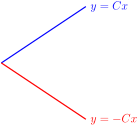A tiny technical note is that it's possible that \(f(x)=Cx\) when \(x=0\) and \(f(x)=-Cx\) when \(x \gt 0\) (or vice-versa). This would not introduce a jump discontinuity, but it also does not satisfy that \(f(x) \gt 0\) for some values of \(x\text{.}\)
Remark: in several instances below, solving a differential equation will lead us to conclude something like \(|y|=g(x)\text{.}\) In these cases, we choose either \(y=g(x)\text{,}\) or \(y=-g(x)\text{,}\) but not \(y=\pm g(x)\) (which is not a function) or that \(y\) is sometimes \(g(x)\text{,}\) and other times \(-g(x)\text{.}\) The reasoning above somewhat explains this choice: if \(y\) were sometimes positive and sometimes negative, then \(\diff{y}{x}\) would not exist at the values of \(x\) where the sign of \(y\) switches, unless that switch occurrs at a root of \(g(x)\text{.}\) Since that's a pretty specific occurrence, we usually feel safe ignoring it to avoid getting bogged down in technical details.
6.
Express the following sentence 12 as a differential equation. You don't have to solve the equation.
About 0.3 percent of the total quantity of morphine in the bloodstream is eliminated every minute.
Let \(Q(t)\) be the quantity of morphine in a patient's bloodstream at time \(t\text{,}\) where \(t\) is measured in minutes.
Using the definition of a derivative,
So, \(\diff{Q}{t}\) is roughly the change in the amount of morphine in one minute, from \(t\) to \(t+1\text{.}\)
\(\displaystyle \diff{Q}{t}=-0.003Q(t)\)
Let \(Q(t)\) be the quantity of morphine in a patient's bloodstream at time \(t\text{,}\) where \(t\) is measured in minutes.
Using the definition of a derivative,
So, \(\diff{Q}{t}\) is roughly the change in the amount of morphine in one minute, from \(t\) to \(t+1\text{.}\)
The sentence tells us that the change in the amount of morphine in one minute is about \(-0.003Q\text{,}\) where \(Q\) is the quantity in the bloodstream. That is:
7.
Suppose a particular change is occurring in a language, from an old form to a new form. 13 Let \(p(t)\) be the proportion (measured as a number between 0, meaning none, and 1, meaning all) of the time that speakers use the new form. Piotrowski's law 14 predicts the following.
Use of the new form over time spreads at a rate that is proportional to the product of the proportion of the new form and the proportion of the old form.
Express this as a differential equation. You do not need to solve the differential equation.
If \(p(t)\) is the proportion of the new form, then \(1-p(t)\) is the proportion of the old form.
When we say two quantities are proportional, we mean that one is a constant multiple of the other.
\(\diff{p}{t}=\alpha p(t)\big(1-p(t)\big)\text{,}\) for some constant \(\alpha\text{.}\)
If \(p(t)\) is the proportion of times speakers use the new form, measured between 0 and 1, then \(1-p(t)\) is the proportion of times speakers use the old form.
The law, then, states that \(\diff{p}{t}\) is proportional to \(p(t)\times \big(1-p(t)\big)\text{.}\) When we say two quantities are proportional, we mean that one is a constant multiple of the other. So, the law says
for some constant \(\alpha\text{.}\)
Remark: it follows from this model that, when a new form is either very rare or entirely ubiquitous, the rate of change of its adoption is small. This makes sense: if the new form is used all the time (\(p(t)\approx 1\)), there's nobody left to convert; if the new form is almost never used (\(p(t)\approx 0\)) then people don't know about it, so they won't pick it up.
8.
Consider the differential equation \(y'=\frac{y}{2}-1\text{.}\)
- When \(y=0\text{,}\) what is \(y'\text{?}\)
- When \(y=2\text{,}\) what is \(y'\text{?}\)
- When \(y=3\text{,}\) what is \(y'\text{?}\)
- On the axes below, interpret the marks we have made, and use them to sketch a possible solution to the differential equation.
The red marks show the slope \(y(x)\) would have at a point if it crosses that point. So, pick a value of \(y(0)\text{;}\) based on the red marks, you can see how fast \(y(x)\) is increasing or decreasing at that point, which leads you roughly to a value of \(y(1)\text{;}\) again, the red marks tell you how fast \(y(x)\) is increasing or decreasing, which leads you to a value of \(y(2)\text{,}\) etc (unless you're already off the graph).
(a) \(-1\)
(b) \(0\)
(c) \(0.5\)
(d) Two possible answers are shown below:
Another possible answer is the constant function \(y=2\text{.}\)
- When \(y=0\text{,}\) \(y'=\frac{0}{2}-1=-1\text{.}\)
- When \(y=2\text{,}\) \(y'=\frac{2}{2}-1=0\text{.}\)
- When \(y=3\text{,}\) \(y'=\frac{3}{2}-1=0.5\text{.}\)
-
The small red lines have varying slopes. The red lines on points with \(y\)-coordinate 2 have slopes of \(0\text{;}\) this matches \(y'\) when \(y=0\text{,}\) as we saw above. The red lines on points with \(y\)-coordinate 0 have slopes of approximately \(-1\text{;}\) again, this matches what we found for \(y'\) when \(y=0\text{.}\)
The red lines correspond to a tiny section of \(y(x)\text{,}\) if \(y(x)\) passes through that point. So, we can sketch a possible curve \(y(x)\) satisfying the equation by starting somewhere, then following the slopes.
For example, suppose we start at the origin.
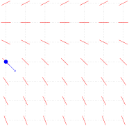Then our function is decreasing at that point, which leads us to a coordinate where (as we see from the red marks) the function is decreasing slightly faster.

Following the red marks leads us down even further, so our function \(y(x)\) might look something like this:
However, we didn't have to start at the origin. Suppose \(y(0)=3\text{.}\) Then at \(x=0\text{,}\) \(y\) is increasing, with slope \(\frac{1}{2}\text{.}\)
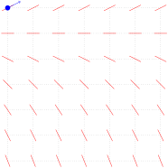Our red marks run out that high up, but we now \(y'=\frac{1}{2}y-1\text{,}\) so \(y'\) increases as \(y\) increases. That means our function keeps getting steeper and steeper, possibly something like this:
If \(y(0)=2\text{,}\) we see another possible curve is the constant function \(y(x)=2\text{.}\)
Remark: from Theorem 7.4.4, we see the solutions to the equation \(y'=\frac{1}{2}y-1 = \frac{1}{2}(y-2)\) are of the form \(y(x)=Ce^{x/2}+2\) for some constant \(C\text{.}\) Check that the curves you're sketching look exponential.
9.
Consider the differential equation \(y'=y-\frac{x}{2}\text{.}\)
- If \(y(1)=0\text{,}\) what is \(y'(1)\text{?}\)
- If \(y(1)=2\text{,}\) what is \(y'(1)\text{?}\)
- If \(y(1)=-2\text{,}\) what is \(y'(1)\text{?}\)
- Draw a sketch similar to that of Question 8(d) showing the derivatives of \(y\) at the points with integer values for \(x\) in \([0,6]\) and \(y\) in \([-3,3]\text{.}\)
- Sketch a possible graph of \(y\text{.}\)
(a) \(-\dfrac{1}{2}\)
(b) \(\dfrac{3}{2}\)
(c) \(-\dfrac{5}{2}\)
(d) Your sketch should look something like this:
(e) There are lots of possible answers. Several are shown below.
- If \(y(1)=0\text{,}\) then \(y'(1)=0-\frac{1}{2}=-\frac{1}{2}\text{.}\)
- If \(y(1)=2\text{,}\) then \(y'(1)=2-\frac{1}{2}=\frac{3}{2}\text{.}\)
- If \(y(1)=-2\text{,}\) then \(y'(1)=-2-\frac{1}{2}=-\frac{5}{2}\text{.}\)
-
There are \(7 \times 7 = 49\) points on the grid; we don't want to make 49 separate calculations. Let's find some shortcuts.
- If \(y'(x)=0\text{,}\) then \(y=\frac{x}{2}\text{,}\) which applies to the points \((0,0)\text{,}\) \((2,1)\text{,}\) \((4,2)\) and \((6,3)\text{.}\) These are the orange dots in the sketch below.
- If \(y'(x)=1\text{,}\) then \(y=1+\frac{x}{2}\text{,}\) which applies to the points \((0,1)\text{,}\) \((2,2)\text{,}\) and \((4,3)\text{.}\) (Note these are exactly 1 unit above the points with \(y'=0\text{.}\)) These are the red dots in the sketch below.
- If \(y'(x)=-1\text{,}\) then \(y=-1+\frac{x}{2}\text{,}\) which applies to the points \((0,-1)\text{,}\) \((2,-2)\text{,}\) and \((4,-3)\text{.}\) (Note these are exactly 1 unit below the points with \(y'=0\text{.}\)) These are the yellow dots in the sketch below.
- If \(x\) increases and \(y\) stays the same, \(y\) decreases.
- If \(y\) increases and \(x\) stays the same, \(y\) increases.
- If we draw a straight line of slope \(\dfrac{1}{2}\) on our sketch, for every point on that line, our mark has the same slope: for instance, the points where we draw a mark with slope 0 are \((0,0)\text{,}\) \((2,1)\text{,}\) and \((4,2)\text{,}\) and these all lie on the line \(f(x)=\frac{x}{2}\text{.}\)
This is enough to give us a pretty good sketch. The points whose slopes we found explicitly have dots; the rest can be sketched as either steeper or less steep than what's near them.
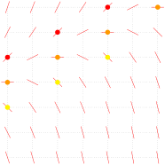 -
To sketch a possible graph of \(y(x)\text{,}\) we choose a point \((x,y(x))\text{,}\) then follow the red lines.
For example, if we suppose that \(y(4)=2\text{,}\) then near \((4,2),\) the lines tell us \(y(x)\) is fairly flat; and it is increasing to the left of \(x=4\text{,}\) and decreasing to the right.
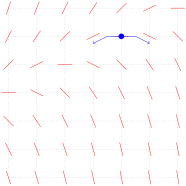Following the red lines a little farther in each direction brings us somewhere like this:
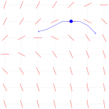Extending yet further, we might sketch something like the following:
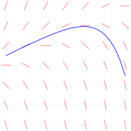By choosing another point \((x,y(x))\) to be on the curve, we might find other potential curves. Some examples are shown below.
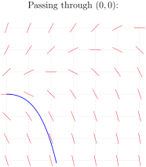 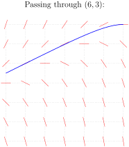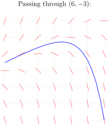
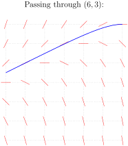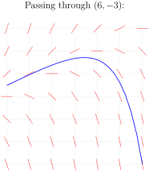
Remark: the differential equation \(y'=y-\frac{x}{2}\) is not separable, so we haven't talked about how to solve it. The solutions have the form \(y(x)=Ce^{x}+\frac{x+1}{2}\text{.}\) You can verify that these functions satisfy \(y'=y-\frac{x}{2}\text{.}\)
10. 2016Q5.
Find the solution to the separable initial value problem:
Express your solution explicitly as \(y = y(x)\text{.}\)
Start by multiplying both sides of the equation by \(e^y\) and \(\dee{x}\text{,}\) pretending that \(\diff{y}{x}\) is a fraction, according to our mnemonic.
\(y = \log(x^2+2)\)
Rearranging, we have:
Integrating both sides:
\begin{align*} \int e^y\,\dee{y} &= \int 2x\,\dee{x}\\ e^y &= x^2+C\\ \end{align*}Since \(y=\log2\) when \(x=0\text{,}\) we have
\begin{align*} e^{\log 2} &= 0^2+C\\ 2 &= C,\\ \end{align*}and therefore
\begin{align*} e^{y} &= x^2+2\\ y &= \log(x^2+2) \end{align*}11. M121 2002A.
Find the solution \(y(x)\) of \(\displaystyle\diff{y}{x}=\frac{xy}{x^2+1}, \quad y(0)=3\text{.}\)
You need to solve for your function \(y(x)\) explicitly. Be careful with absolute values: if \(|y|=F\text{,}\) then \(y=F\) or \(y=-F\text{.}\) However, \(y=\pm F\) is not a function. You have to choose one: \(y=F\) or \(y=-F\text{.}\)
\(y(x)=3\sqrt{1+x^2}\)
Using separation of variables:
To satisfy \(y(0)=3\text{,}\) we need \(\log 3 = \frac{1}{2}\log(1+0)+C\text{,}\) so \(C=\log 3\text{.}\) Thus:
\begin{align*} \log |y| &= \frac{1}{2}\log(1+x^2)+\log 3\\ &=\log\sqrt{1+x^2}+\log 3\\ &=\log 3\sqrt{1+x^2}\\ \end{align*}So,
\begin{align*} |y|&=3\sqrt{1+x^2}\\ \end{align*}We are told to find a functon \(y(x)\text{.}\) So far, we have two possible functions from the work above: maybe \(y=3\sqrt{1+x^2}\text{,}\) and maybe \(y=-3\sqrt{1+x^2}\text{.}\) It's important to note that \(y=\pm3\sqrt{1+x^2}\) is not a function: for an equation to represent a function, for every input in the domain, there must only be one output. That is, functions pass the vertical line test. (See the CLP-1 text for a definition of the vertical line test and a formal definition of a function.) So, we need to decide whether our function is \(y=3\sqrt{1+x^2}\) or \(y=-3\sqrt{1+x^2}\text{.}\) Since \(y(0)=3\text{,}\) we conclude
\begin{align*} y(x)&=3\sqrt{1+x^2} \end{align*}12. M105 2015A.
Solve the differential equation \(y'(t)=e^{\frac{y}{3}}\cos t\text{.}\) You should express the solution \(y(t)\) in terms of \(t\) explicitly.
If your answer doesn't quite look like the answer given, try manipulating it with logarithm rules: \(\log a + \log b = \log(ab)\text{,}\) and \(a\log b = \log(b^a)\text{.}\)
\(y(t)=3\log\left(\dfrac{-3}{C+\sin t}\right)\)
The given differential equation is separable and we solve it accordingly.
for any constant \(C\text{.}\)
Since the domain of logarithm is \((0,\infty)\text{,}\) the solution only exists when \(C+\sin t \lt 0\text{.}\)
13. 2000D.
Solve the differential equation
Simplify the equation.
\(y=\root{3}\of{\frac{3}{2} e^{x^2}+C}\text{.}\)
The given differential equation is separable and we solve it accordingly.
We can guess the antiderivative of \(xe^{x^2}\text{,}\) or use the substitution \(u=x^2\text{,}\) \(\dee{u}=2x\dee{x}\text{.}\)
\begin{align*} \frac{y^3}{3}&=\frac{1}{2} e^{x^2}+C'\\ y^3&=\frac{3}{2} e^{x^2}+3C'\\ \end{align*}Since \(C'\) can be any constant in \((-\infty,\infty)\text{,}\) then also \(3C'\) can be any constant in \((-\infty,\infty)\text{,}\) so we replace \(3C'\) with the arbitrary constant \(C\text{.}\)
\begin{align*} y^3&=\frac{3}{2} e^{x^2}+C\\ y&=\root{3}\of{\frac{3}{2} e^{x^2}+C} \end{align*}for any constant \(C\text{.}\)
14. 2000D.
Let \(y=y(x)\text{.}\) Find the general solution of the differential equation \(y'=xe^y\text{.}\)
Be careful with the arbitrary constant.
\(\displaystyle y=-\log\left(C-\frac{x^2}{2}\right)\)
The solution only exists for \(C-\frac{x^2}{2} \gt 0\text{,}\) i.e. \(C \gt 0\) and the function has domain \(\left\{x:|x| \lt \sqrt{2C}\right\}\text{.}\)
The given differential equation is separable and we solve it accordingly.
Since \(C\) can be any constant in \((-\infty,\infty)\text{,}\) then also \(-C\) can be any constant in \((-\infty,\infty)\text{,}\) so we write \(C\) instead of \(-C\text{.}\)
\begin{align*} e^{-y}&=C-\frac{1}{2} x^2\\ -y&=\log\left(C-\frac{x^2}{2}\right)\\ y&=-\log\left(C-\frac{x^2}{2}\right) \end{align*}for any constant \(C\text{.}\)
The solution only exists for \(C-\frac{x^2}{2} \gt 0\text{.}\) For this to happen, we need \(C \gt 0\text{,}\) and then the domain of the function is those values \(x\) for which \(|x| \lt \sqrt{2C}\text{.}\)
15. 2016Q5.
Find the solution to the differential equation \(\displaystyle\frac{y y'}{e^x -2x} = \frac{1}{y}\) that satisfies \(y(0) = 3\text{.}\) Solve completely for \(y\) as a function of \(x\text{.}\)
Start by cross-multiplying.
\(y = (3e^x -3x^2+ 24)^{1/3}\)
The given differential equation is separable and we solve it accordingly. Cross--multiplying, we rewrite the equation as
Integrating both sides, we find
\begin{align*} \int y^2 \,\dee{y} &=\int (e^x - 2x ) \,\dee{x}\\ \frac{1}{3}y^3 &= e^x - x^2 + C\\ \end{align*}Setting \(x = 0\) and \(y = 3\text{,}\) we find \(\frac{1}{3}3^3=e^0-0^2+C\) and hence \(C=8\text{.}\)
\begin{align*} \frac{1}{3}y^3 &= e^x - x^2 + 8\\ y &= (3e^x -3x^2+ 24)^{1/3} \end{align*}16. 2016Q5.
Find the function \(y=f(x)\) that satisfies
Be careful about signs. If \(y^2=F\text{,}\) then possibly \(y=\sqrt{F}\text{,}\) and possibly \(y=-\sqrt{F}\text{.}\) However, \(y=\pm\sqrt{F}\) is not a function.
\(y=f(x) = -\dfrac{1}{\sqrt{x^2+16}}\)
This is a separable differential equation that we solve in the usual way.
To have \(y=-\frac{1}{4}\) when \(x=0\text{,}\) we must choose \(C\) to obey
\begin{align*} {\Big(-\frac{1}{4} \Big)}^{-2}& =0 +2C\\ 16&= 2C\\ \end{align*}So, from (\(*\)),
\begin{align*} y^{-2}&=x^2+2C =x^2+16\\ y^2&=\frac{1}{x^2+16}\\ \end{align*}Now, we have two potential candidates for \(y(x)\text{:}\)
\begin{align*} y&=\frac{1}{\sqrt{x^2+16}}\qquad\text{OR}\qquad y=-\frac{1}{\sqrt{x^2+16}}\\ \end{align*}We know \(y=-\frac14\) when \(x=0\text{.}\) The only function above that fits this is
\begin{align*} y&=-\frac{1}{\sqrt{x^2+16}} \end{align*}So, \(f(x) = -\dfrac{1}{\sqrt{x^2+16}}\text{.}\)
17. 2016A.
Find the function \(y=y(x)\) that satisfies \(y(1)=4\) and
Be careful about signs.
\(y = \sqrt{10x^3 + 4x^2 + 6x - 4}\)
This is a separable differential equation that we solve in the usual way. Cross-multiplying and integrating,
Plugging in \(x=1\) and \(y=4\) gives \(\frac{4^2}{2} = 5+2+3+C,\) and so \(C=-2\text{.}\) Therefore
\begin{align*} \frac{y^2}{2} &= 5x^3 + 2x^2 + 3x - 2\\ y^2 &= 10x^3 + 4x^2 + 6x - 4\\ \end{align*}This leaves us with two possible functions for \(y\text{:}\)
\begin{align*} y = \sqrt{10x^3 + 4x^2 + 6x - 4} &\qquad\text{or}\qquad y = - \sqrt{10x^3 + 4x^2 + 6x - 4}\\ \end{align*}When \(x=1\text{,}\) \(y=4\text{.}\) This only fits the first equation, so
\begin{align*} y &= \sqrt{10x^3 + 4x^2 + 6x - 4} \end{align*}18. 2002A.
Find the solution \(y(x)\) of \(y'=x^3y\) with \(y(0)=1\text{.}\)
Be careful about signs. If \(\log|y|=F\text{,}\) then \(|y|=e^F\text{.}\) Since you should give your answer as an explicit function \(y(x)\text{,}\) you need to decide whether \(y=e^F\) or \(y=-e^F\text{.}\)
\(y(x) = e^{x^4/4}\)
The given differential equation is separable and we solve it accordingly.
We are told that \(y=1\) when \(x=0\text{.}\) That is, \(1=e^0e^C\text{,}\) so \(e^C=1\text{.}\) That is, \(C=0\text{.}\)
\begin{align*} |y|&=e^{x^4/4}\\ \end{align*}This leaves us with two potential functions:
\begin{align*} y=e^{x^4/4}&\qquad\text{or}\qquad y=-e^{x^4/4}\\ \end{align*}The first is always positive, and the second is always negative. Since \(y=1\) (a positive number) when \(x=0\text{,}\) we see
\begin{align*} y&=e^{x^4/4} \end{align*}19. 2014A.
Find the solution of the initial value problem
Move the \(y\) from the left hand side to the right hand side, then use partial fractions to integrate.
Be careful about the signs. Remember that we need \(y=-1\) when \(x=1\text{.}\) This suggests how to deal with absolute values.
\(y=\frac{1}{1-2x}\)
This is a separable differential equation, even if it doesn't quite look like it. First move the \(y\) from the left hand side to the right hand side.
Using the method of partial fractions, we see \(\frac{1}{y(y-1)} = \frac{1}{y-1}-\frac{1}{y}.\)
\begin{align*} \left(\frac{1}{y-1}-\frac{1}{y}\right)\,\dee{y} &=\frac{\dee{x}}{x}\\ \int\left(\frac{1}{y-1}-\frac{1}{y}\right)\,\dee{y} &=\int\frac{\dee{x}}{x}\\ \log|y-1|-\log|y| &=\log |x| + C\\ \log\frac{|y-1|}{|y|}&=\log|x|+C \tag{$*$}\\ \end{align*}To determine \(C\) we set \(x=1\) and \(y=-1\text{.}\)
\begin{align*} \log\frac{|-2|}{|-1|}&=\log|1|+C\\ \log 2&=C\\ \end{align*}Returning to (\(*\)),
\begin{align*} \log\frac{|y-1|}{|y|}&=\log|x|+\log 2\\ \log\left|\frac{y-1}{y}\right|&=\log|2x|\\ \left|\frac{y-1}{y}\right|&=|2x|\\ \end{align*}As \(y(1)=-1\) is an initial condition, we have that \(x\ge 1\) and \(|2x|=2x\text{.}\) For \(x=1\text{,}\) we have \(y=-1\text{.}\) So at least for \(x\) near \(1\text{,}\) we have \(y\) near \(-1\text{,}\) so that \(\frac{y-1}{y}\) is positive and we may drop the absolute value signs. There remains the possibility that \(\frac{y(x)-1}{y(x)}\) changes sign for some larger \(x\gt 1\text{.}\) For now, we will simply ignore that possibility. At the end, we will explicitly check that the \(y(x)\) we come up with really does satisfy the differential equation \(x\diff{y}{x}+y=y^2\) and the initial condition \(y(1)=-1\text{.}\)
\begin{align*} \frac{y-1}{y}&=2x\\ y-1&=2xy\\ y-2xy&=1\\ y(1-2x)&=1\\ y&=\frac{1}{1-2x} \end{align*}As a check, we compute:
So, our differential equation is satisfied. Furthermore:
\begin{align*} y(1)&=\frac{1}{1-2\times 1}=-1 \end{align*}as desired. This confirms that our solution is correct.
20. 2012A.
A function \(f(x)\) is always positive, has \(f(0)=e\) and satisfies \(f'(x) = x\,f(x)\) for all \(x\text{.}\) Find this function.
The unknown function \(f(x)\) satisfies an equation that involves the derivative of \(f\text{.}\)
\(f(x) = e\cdot e^{x^2/2}\)
The unknown function \(f(x)\) satisfies an equation that involves the derivative of \(f\text{.}\) That means we're in differential equation territory. Specifically, we are told that \(y=f(x)\) obeys the separable differential equation \(\diff{y}{x}=xy\text{.}\)
To determine \(C\) we set \(x=0\) and \(y=e\text{.}\)
\begin{align*} \log e &=\frac{0^2}{2}+ C\\ 1&= C\\ \end{align*}So, the solution is
\begin{align*} \log|y|&= \frac{x^2}{2} + 1\\ \end{align*}We are told that \(y=f(x) \gt 0\text{,}\) so may drop the absolute value signs.
\begin{align*} \log y &= \frac{x^2}{2}+1\\ y&=e^{1+\frac{1}{2}x^2}=e\cdot e^{x^2/2} \end{align*}21. M105 2013A.
Solve the following initial value problem:
Try guessing the partial fractions expansion of \(\dfrac{1}{x(x+1)}\text{.}\)
Since \(x=1\) is in the domain and \(x=0\) is not, you may assume \(x \gt 0\) for all \(x\) in the domain.
\(y(x)=\sqrt{4+2\log\frac{2x}{x+1}}\text{.}\) Note that, to satisfy \(y(1)=2\text{,}\) we need the positive square root.
This is a separable differential equation.
Using partial fractions decomposition, we find \(\frac{1}{x(x+1)} = \frac{1}{x}-\frac{1}{x+1}\text{.}\)
\begin{align*} y\,\dee{y} &=\left(\frac{1}{x}-\frac{1}{x+1}\right)\,\dee{x}\\ \int y\,\dee{y} &=\int\left(\frac{1}{x}-\frac{1}{x+1}\right)\,\dee{x}\\ \frac{y^2}{2}&=\log|x|-\log|x+1|+C = \log\left| \frac{x}{x+1}\right|+C\\ \end{align*}To satisfy the initial condition \(y(1)=2\) we must choose \(C\) to obey
\begin{align*} \frac{2^2}{2} &= \log\left|\frac{1}{1+1}\right|+C\\ 2&=\log\frac12+C\\ C&=2-\log\frac{1}{2}\\ \end{align*}So,
\begin{align*} \frac{y^2}{2}&= \log\left| \frac{x}{x+1}\right|+2-\log\frac{1}{2}\\ y^2&= 2\log\left| \frac{x}{x+1}\right|+4-2\log\frac{1}{2}\\ \end{align*}Note that the question specifies that \(y(1)=2\) is an initial condition. So we always have \(x\ge 1\text{.}\) Then \(\frac{x}{x+1}\) is positive, and we can drop the absolute values.
\begin{align*} y^2&= 2\log \frac{x}{x+1}+4-2\log\frac{1}{2}\\ \end{align*}This leaves two options for \(y(x)\text{:}\) the positive or negative square root of the right hand side above. Since \(y(1)=1\text{,}\) which is positive, we must choose the positive square root.
\begin{align*} y(x)&=\sqrt{2\Big(\log\frac{x}{x+1}-\log\frac{1}{2}+2\Big)}\\ &=\sqrt{4+2\log\frac{2x}{x+1}} \end{align*}You might worry that \(y(x)\) could pass through zero, changing sign, at some \(x\gt 1\text{.}\) But the differential equation says that \(\diff{y}{x}=\frac{1}{(x^2+x)y}\) is positive whenever \(y\gt 0\) and \(x\ge 1\text{.}\) So \(y(x)\) is an increasing function whenever \(y\gt 0\) and \(x\ge 1\text{.}\) As \(y(1)=2\text{,}\) we have \(y(x)\ge 2\) for all \(x\ge 1\text{.}\)
22. 2015A.
Find the solution of the differential equation \(\displaystyle \frac{1+\sqrt{y^2-4}}{\tan x} y' = \frac{\sec x}y\) that satisfies \(y(0)=2\text{.}\) You don't have to solve for \(y\) in terms of \(x\text{.}\)
\(\displaystyle\diff{}{x}\{\sec x\} = \sec x \tan x\)
\(\displaystyle y^2+\frac{2}{3}(y^2-4)^{3/2}=2\sec x +2\)
This is a separable differential equation.
For the integral on the left, we use the substitution \(u={y^2-4}\text{,}\) \(\frac12\dee{u}=y\,\dee{y}\text{.}\)
\begin{align*} \frac{1}{2}\int \big(1+\sqrt{u}\big)\,\dee{u}&=\sec x +C\\ \frac{1}{2} \left(u+\frac{2}{3}u^{3/2}\right)&=\sec x +C\\ \frac{1}{2} \left(y^2-4+\frac{2}{3}(y^2-4)^{3/2}\right)&=\sec x +C\\ y^2+\frac{2}{3}(y^2-4)^{3/2}&=2\sec x +2C+4\\ \end{align*}To find \(C\) we set \(x=0\) and \(y=2\text{.}\)
\begin{align*} 4+\frac{2}{3}\sqrt{4-4}^3&=2\sec (0)+2C+4\\ 4&=2+2C+4\\ 2&=2C+4\\ \end{align*}So,
\begin{align*} y^2+\frac{2}{3}(y^2-4)^{3/2}&=2\sec x +2 \end{align*}23. 1996A.
The fish population in a lake is attacked by a disease at time \(t=0\text{,}\) with the result that the size \(P(t)\) of the population at time \(t\ge 0\) satisfies
where \(k\) is a positive constant. If there were initially 90,000 fish in the lake and 40,000 were left after 6 weeks, when will the fish population be reduced to 10,000?
The general solution to the differential equation will contain the constant \(k\) and one other constant. They are determined by the data given in the question.
\(12\text{ weeks}\)
The given differential equation is separable and we solve it accordingly.
At \(t=0\text{,}\) \(P=90,000\) so
\begin{align*} 2\sqrt{90,000}&=-k\times 0+C\\ C&=2\times 300=600\\ \end{align*}Therefore,
\begin{align*} 2\sqrt{P}&=-kt+600\tag{$*$}\\ \end{align*}Now, we find \(k\text{.}\) Let \(t\) be measured in weeks. Then when \(t=6\text{,}\) \(P=40,000\text{.}\)
\begin{align*} 2\sqrt{40,000}&=-6k+600\\ 2\cdot 200&=-6k+600\\ k&=\frac{200}{6} = \frac{100}{3}\\ \end{align*}Substituting our value of \(k\) into (\(*\)):
\begin{align*} 2\sqrt{P}&=-\frac{100}{3}t+600\\ \end{align*}To find when the population will be 10,000, we set \(P=10,000\) and solve for \(t\text{.}\)
\begin{align*} 2\sqrt{10,000}&=-\frac{100}{3}t+600\\ 2\cdot 100&=-\frac{100}{3}t+600\\ \frac{100}{3}t&=400\\ t&=12 \end{align*}Since we measured \(t\) in weeks when we found \(k\text{,}\) we see that in 12 weeks the population will decrease to 10,000 individuals.
24. 1996A.
An object of mass \(m\) is projected straight upward at time \(t=0\) with initial speed \(v_0\text{.}\) While it is going up, the only forces acting on it are gravity (assumed constant) and a drag force proportional to the square of the object's speed \(v(t)\text{.}\) It follows that the differential equation of motion is
where \(g\) and \(k\) are positive constants. At what time does the object reach its highest point?
- When you're solving the differential equation, you should have an integral that you can massage to look something like arctangent.
- What is the velocity of the object at its highest point?
- Your final answer will depend on the (unspecified) constants \(v_0\text{,}\) \(m\text{,}\) \(g\) and \(k\text{.}\)
\(t=\displaystyle\sqrt{\frac{m}{kg}}\arctan \left(\sqrt{\frac{k}{mg}}\,v_0\right)\)
The given differential equation is separable and we solve it accordingly.
The left integral looks something like the antiderivative of arctangent. Let's factor out that \(mg\) from the denominator.
\begin{align*} \frac{1}{mg}\int\frac{m}{1+\frac{k}{mg}v^2}\,\dee{v}&=-t+C\\ \frac{1}{g}\int\frac{1}{1+\left(\sqrt{\frac{k}{mg}}v\right)^2}\,\dee{v}&=-t+C\\ \end{align*}Now it looks even more like the derivative of arctangent. We can guess the antiderivative from here, or use the substitution \(u=\sqrt{\frac{k}{mg}}v\text{,}\) \(\dee{u}=\sqrt{\frac{k}{mg}}\,\dee{v}\text{.}\)
\begin{align*} \frac{1}{g}\sqrt{\frac{mg}{k}}\arctan\left(\sqrt{\frac{k}{mg}}v\right)&=-t+C\\ \sqrt{\frac{m}{gk}}\arctan\left(\sqrt{\frac{k}{mg}}v\right)&=-t+C\tag{$*$}\\ \end{align*}At \(t=0\text{,}\) \(v=v_0\text{,}\) so:
\begin{align*} \sqrt{\frac{m}{gk}}\arctan\left(\sqrt{\frac{k}{mg}}v_0\right)&=C\\ \end{align*}Plug \(C\) into \((*)\text{.}\)
\begin{align*} \sqrt{\frac{m}{gk}}\arctan\left(\sqrt{\frac{k}{mg}}v\right)&=\sqrt{\frac{m}{gk}}\arctan\left(\sqrt{\frac{k}{mg}}v_0\right)-t\\ \end{align*}At its highest point, the object has velocity \(v=0\text{.}\) This happens when \(t\) obeys:
\begin{align*} \sqrt{\frac{m}{gk}}\arctan\left(\sqrt{\frac{k}{mg}}0\right)&=\sqrt{\frac{m}{gk}}\arctan\left(\sqrt{\frac{k}{mg}}v_0\right)-t\\ 0&=\sqrt{\frac{m}{gk}}\arctan\left(\sqrt{\frac{k}{mg}}v_0\right)-t\\ t&=\sqrt{\frac{m}{gk}}\arctan\left(\sqrt{\frac{k}{mg}}v_0\right) \end{align*}25. 1996D.
A motor boat is traveling with a velocity of 40 ft/sec when its motor shuts off at time \(t=0\text{.}\) Thereafter, its deceleration due to water resistance is given by
where \(k\) is a positive constant. After 10 seconds, the boat's velocity is 20 ft/sec.
- What is the value of \(k\text{?}\)
- When will the boat's velocity be 5 ft/sec?
The general solution to the differential equation will contain the constant \(k\) and one other constant. They are determined by the data given in the question.
(a) \(k=\frac{1}{400}\)
(b) \(t=70\mathrm{sec}\)
(a) The given differential equation is separable and we solve it accordingly.
At \(t=0\text{,}\) \(v=40\) so
\begin{align*} \frac{1}{40}&=k\times 0+ C\\ C&=\frac{1}{40}\\ \end{align*}Therefore,
\begin{align*} v(t)&=\frac{1}{kt+C}=\frac{1}{kt+1/40}=\frac{40}{40kt+1}\tag{$*$}\\ \end{align*}The constant of proportionality \(k\) is determined by
\begin{align*} v(10)&=20\\ 20&=\frac{40}{40k\times 10+1}\\ \frac{1}{2}&=\frac{1}{400k+1}\\ 400k+1&=2\\ k&=\frac{1}{400} \end{align*}(b) Subbing in the value of \(k\) to \((*)\text{,}\)
We want to know the value of \(t\) that gives \(v(t)=5\text{.}\)
\begin{align*} 5&=\frac{40}{t/10+1}\\ \frac{t}{10}+1&=8\\ t&=70\text{ sec} \end{align*}26. M121 2000A.
Consider the initial value problem \(\diff{x}{t}= k(3-x)(2-x)\text{,}\) \(x(0)=1\text{,}\) where \(k\) is a positive constant. (This kind of problem occurs in the analysis of certain chemical reactions.)
- Solve the initial value problem. That is, find \(x\) as a function of \(t\text{.}\)
- What value will \(x(t)\) approach as \(t\) approaches \(+\infty\text{.}\)
The method of partial fractions will help you integrate.
To solve \(\frac{x-a}{x-b}=Y\) for \(x\text{,}\) move the terms containing \(x\) out of the denominator, then gather them on one side of the equals sign and factor out the \(x\text{.}\)
To find the limit, you can avoid l'Hôpital's rule using some clever algebra--but you can also just use l'Hôpital's rule.
(a) \(x(t)=\dfrac{3-4e^{kt}}{1-2e^{kt}}\)
(b) As \(t\rightarrow\infty\text{,}\) \(x\rightarrow 2\text{.}\)
(a) The given differential equation is separable and we solve it accordingly.
Using the method of partial fractions, we find \(\frac{1}{(x-2)(x-3)}=\frac{1}{x-3}-\frac{1}{x-2}\text{.}\)
\begin{align*} \int\Big[\frac{1}{x-3}-\frac{1}{x-2}\Big]\dee{x}&= \int k\dee{t}\\ \log|x-3|-\log|x-2|&=kt+C\\ \log\left|\frac{x-3}{x-2}\right|&=kt+C\\ \left|\frac{x-3}{x-2}\right|&=e^{kt+C}=e^{kt}e^C\\ \frac{x-3}{x-2}&=De^{kt}\\ \end{align*}where \(D=\pm e^C\text{.}\) When \(t=0\text{,}\) \(x=1\text{,}\) forcing
\begin{align*} \frac{1-3}{1-2}&=De^{0}\\ D&=2\\ \end{align*}Hence
\begin{align*} \frac{x-3}{x-2}&=2e^{kt}\\ x-3&=2e^{kt}(x-2)\\ x-2e^{kt}x&=3-4e^{kt}\\ x(t)&=\frac{3-4e^{kt}}{1-2e^{kt}} \end{align*}(b) To evaluate the limit, we could use l'Hôpital's rule, but we could also just multiply the numerator and denominator by \(e^{-kt}\text{.}\) Note \(\lim\limits_{t \to \infty} e^{-tk}=0\text{.}\)
27. 1997D.
The quantity \(P=P(t)\text{,}\) which is a function of time \(t\text{,}\) satisfies the differential equation
and the initial condition \(P(0)=2\text{.}\)
- Solve this equation for \(P(t)\text{.}\)
- What is \(P\) when \(t=0.5\text{?}\) What is the limiting value of \(P\) as \(t\) becomes large?
Be careful about signs.
Part (a) has some algebraic similarities to Question 26.
(a) \(P=\dfrac{4}{1+e^{-4t}}\)
(b) At \(t=\dfrac{1}{2}\text{,}\) \(P\approx 3.523\text{.}\) As \(t\rightarrow\infty\text{,}\) \(P\rightarrow 4\text{.}\)
(a) The given differential equation is separable and we solve it accordingly.
Using the method of partial fractions, we see \(\frac{1}{P(4-P)}=\frac{1/4}{P} + \frac{1/4}{4-P}\text{.}\)
\begin{align*} \frac{1}{4}\Big[\frac{1}{P}+\frac{1}{4-P}\Big]\dee{P}&=\dee{t}\\ \int \frac{1}{4}\Big[\frac{1}{P}+\frac{1}{4-P}\Big]\dee{P}&=\int\dee{t}\\ \frac{1}{4}\big[\log|P|-\log|4-P|\Big]&=t+C\\ \end{align*}When \(t=0\text{,}\) \(P=2\text{,}\) so \(\frac{1}{4}\big[\log|2|-\log|2|\big]=C\implies C=0\text{.}\) So,
\begin{align*} \frac{1}{4}\log\Big|\frac{P}{4-P}\Big|&=t\\ \end{align*}At time \(t=0\text{,}\) \(\frac{P}{4-P}=1 \gt 0\text{.}\) The ratio may not change sign at any finite time, because this could only happen if at some finite time \(P\) took either the value 0 or the value 4. But at this time \(t=\frac{1}{4}\log\big|\frac{P}{4-P}\big|\) would have to be infinite. So \(\frac{P}{4-P} \gt 0\) for all time and:
\begin{align*} \frac{1}{4}\log \frac{P}{4-P} &=t\\ \log \frac{P}{4-P} &=4t\\ \frac{P}{4-P} &=e^{4t}\\ P&=(4-P)e^{4t}\\ P+Pe^{4t}&=4e^{4t}\\ P&=\frac{4e^{4t}}{1+e^{4t}}=\frac{4}{1+e^{-4t}} \end{align*}(b) At \(t=\frac{1}{2}\text{,}\) \(P=\frac{4}{1+e^{-2}}\approx 3.523\text{.}\)
28. 1998A.
An object moving in a fluid has an initial velocity \(v\) of 400 m/min. The velocity is decreasing at a rate proportional to the square of the velocity. After 1 minute the velocity is 200 m/min.
- Give a differential equation for the velocity \(v=v(t)\) where \(t\) is time.
- Solve this differential equation.
- When will the object be moving at 50 m/min?
The general solution to the differential equation will contain a constant of proportionality and one other constant. They are determined by the data given in the question.
(a) \(\displaystyle \diff{v}{t}=-kv^2\)
(b) \(\displaystyle v=\frac{400}{t+1}\)
(c) \(t=7\)
- The rate of change of speed at time \(t\) is \(-kv(t)^2\) for some constant of proportionality \(k\) (to be determined--but we assume it is positive, since the speed is decreasing). So \(v(t)\) obeys the differential equation \(\diff{v}{t}=-kv^2\) .
- The equation \(\diff{v}{t}=-kv^2\) is a separable differential equation, which we can solve in the usual way.\begin{align*} \diff{v}{t}&=-kv^2\\ \frac{\dee{v}}{-v^2}&=k\dee{t}\\ \int -\frac{\dee{v}}{v^2} &=\int k\dee{t}\\ \frac{1}{v}&=kt+C\\ \end{align*}
At time \(t=0\text{,}\) \(v=400\text{,}\) so \(C=\frac{1}{400}\text{.}\) Then:
\begin{align*} \frac{1}{v}&=kt+\frac{1}{400}\tag{$*$}\\ \end{align*}At time \(t=1\text{,}\) \(v=200\text{,}\) so
\begin{align*} \frac{1}{200}&=k+\frac{1}{400}\\ k&=\frac{1}{400}\\ \end{align*}Therefore, from (\(*\)),
\begin{align*} \frac{1}{v}&=\frac{t}{400}+\frac{1}{400} = \frac{t+1}{400}\\ v&=\frac{400}{t+1} \end{align*} - To find when the speed is 50, we set \(v=50\) in the equation from (b) and solve for \(t\text{.}\)\begin{align*} 50&=\frac{400}{t+1}\\ 50(t+1)&=400\\ t+1&=8\\ t&=7 \end{align*}
29. 1997A.
An investor places some money in a mutual fund where the interest is compounded continuously and where the interest rate fluctuates between \(4\%\) and \(8\%\text{.}\) Assume that the amount of money \(B=B(t)\) in the account in dollars after \(t\) years satisfies the differential equation
- Solve this differential equation for \(B\) as a function of \(t\text{.}\)
- If the initial investment is \(\$1000\text{,}\) what will the balance be at the end of two years?
You do not need to know anything about investing or continuous compounding to do this problem. You are given the differential equation explicitly. The whole first sentence is just window dressing.
(a) \(B(t)=C\,e^{0.06 t-0.02\cos t}\) with the arbitrary constant \(C\ge 0\text{.}\)
(b) \(\$1159.89\)
(a) The given differential equation is separable and we solve it accordingly.
Since \(B(t)\) is our bank account balance and we're not withdrawing money, \(B(t)\) is positive, so we can drop the absolute value signs.
\begin{align*} \log B(t)&= 0.06 t-0.02\cos t +C'\\ B(t)&= e^{0.06 t-0.02\cos t}e^{C'}\\ B(t)&=Ce^{0.06 t-0.02\cos t} \end{align*}for arbitrary constants \(C'\) and \(C=e^{C'}\ge 0\text{.}\)
Remark: the function \(B(t)=0\) obeys the differential equation so that \(C=0\) is allowed, even though it is not of the form \(C=e^{C'}\text{.}\) This seeming discrepancy arose because, in our very first step of part (a), we divided both sides of the differential equation by \(B\text{,}\) which is only allowable if \(B\neq 0\text{.}\) So, in this step, we implicitly assumed \(B\) was nonzero.
(b) We are told that \(B(0)=1000\text{.}\) This allows us to find \(C\text{.}\)
So, when \(t=2\text{,}\)
\begin{align*} B(2)&=\underbrace{\vphantom{p}1000e^{0.02}}_{C} e^{0.06\times 2-0.02\cos 2}=\$1159.89 \end{align*}rounded to the nearest cent.
Note that \(\cos 2\) is the cosine of 2 radians, \(\cos 2 \approx -0.416\text{.}\)
30. M105 2014A.
An endowment is an investment account in which the balance ideally remains constant and withdrawals are made on the interest earned by the account. Such an account may be modeled by the initial value problem \(B'(t) = aB - m\) for \(t \ge 0\text{,}\) with \(B(0) = B_0\) . The constant \(a\) reflects the annual interest rate, \(m\) is the annual rate of withdrawal, and \(B_0\) is the initial balance in the account.
- Solve the initial value problem with \(a = 0.02\) and \(B(0) = B_0 = \$30,000\text{.}\) Note that your answer depends on the constant \(m\text{.}\)
- If \(a = 0.02\) and \(B(0) = B_0 = \$30,000\text{,}\) what is the annual withdrawal rate \(m\) that ensures a constant balance in the account?
Again, you do not need to know anything about investing to do this problem. You are given the differential equation explicitly.
(a) \(B(t) = \left\{30000-50m\right\} e^{t/50} + 50m\)
(b) \(\$600\)
(a) The given differential equation is separable and we could solve it accordingly. In fact we have already done so. If we rewrite the equation in the form
it is of the form covered by Theorem 7.4.4. So that theorem tells us that the solution is
In this problem we are told that \(a=0.02=\frac{1}{50}\text{,}\) so
(b) The solution of part (a) is independent of time if and only if \(30000-50m=0\text{.}\) So we need
31. M121 1999A.
A certain continuous function \(y=y(x)\) satisfies the integral equation
for all \(x\) in some open interval containing \(0\text{.}\) Find \(y(x)\) and the largest interval for which \((*)\) holds.
Differentiate the given integral equation. Plugging in \(x=0\) gives you \(y(0)\text{.}\)
\(y(x)=\dfrac{4-e^{1-\cos x}}{2-e^{1-\cos x}}\text{.}\) The largest allowed interval is
or, roughly, \(- 1.259 \lt x \lt 1.259\text{.}\)
What we're given is an equation relating \(y\) to the integral of a function of \(y\text{.}\) What we know how to solve is an equation relating the derivative of \(y\) to a function of \(y\text{.}\) We can create this by differentiating the given integral equation. By the Fundamental Theorem of Calculus, part 1:
So \(y(x)\) satisfies the differential equation \(y'=\big(y^2-3y+2\big)\sin x =(y-2)(y-1)\sin x\) and the initial equation \(y(0)=3\) (just substitute \(x=0\) into \((*)\)). For \(y\ne 1,2\text{:}\)
Using the method of partial fractions, we see \(\frac{1}{(y-2)(y-1)}=\frac{1}{y-2}-\frac{1}{y-1}\text{.}\)
\begin{align*} \int\Big[\frac{1}{y-2}-\frac{1}{y-1}\Big]\dee{y}&=\int\sin x\dee{x}\\ \log|y-2|-\log|y-1|&=-\cos x+c\\ \log\left|\frac{y-2}{y-1}\right|&=-\cos x+c\\ \left|\frac{y-2}{y-1}\right|&= e^{c-\cos x}\\ \end{align*}The condition \(y(0)=3\) forces \(\big|\frac{3-2}{3-1}\big|= e^{c-1}\) or \(e^c=\frac{1}{2} e\text{,}\) hence
\begin{align*} \left|\frac{y-2}{y-1}\right|&=\frac{1}{2} e^{1-\cos x} \end{align*}Observe that, when \(x=0\text{,}\) \(\frac{y-2}{y-1}=\frac{1}{2} \gt 0\text{.}\) Furthermore \(\frac{1}{2} e^{1-\cos x}\text{,}\) and hence \(\big|\frac{y-2}{y-1}\big|\text{,}\) can never take the value zero. As \(y(x)\) varies continuously with \(x\text{,}\) \(y(x)\) must remain larger than 2. Consquently, \(\frac{y-2}{y-1}\) remains positive and we may drop the absolute value signs. Hence
Solving for \(y\text{,}\)
\begin{align*} \frac{y-2}{y-1}&=\frac{1}{2} e^{1-\cos x}\\ 2(y-2)&=e^{1-\cos x}(y-1)\\ 2y-4&=ye^{1-\cos x}-e^{1-\cos x}\\ y\big(2-e^{1-\cos x}\big)&=4-e^{1-\cos x}\\ y&=\frac{4-e^{1-\cos x}}{2-e^{1-\cos x}} \end{align*}To avoid division by zero in the last step, we need
Let \(L=1-\log 2\text{,}\) for brevity, and note that \(L \gt 0\text{.}\) (This can be seen by observing \(2 \lt e\text{,}\) so, \(\log 2 \lt \log e = 1\text{,}\) hence \(1-\log 2 \gt 0\text{.}\))
We know \(x=0\) is in the domain of our function, but the points \(x=\pm \arccos(L) = \pm\arccos(1-\log 2)\) are not.
Therefore, the largest interval for which our answer makes sense is
or approximately \(- 1.259 \lt x \lt 1.259\text{.}\)
32. M121 2001A.
A cylindrical water tank, of radius 3 meters and height 6 meters, is full of water when its bottom is punctured. Water drains out through a hole of radius 1 centimeter. If
- \(h(t)\) is the height of the water in the tank at time \(t\) (in meters) and
- \(v(t)\) is the velocity of the escaping water at time \(t\) (in meters per second) then
- Torricelli's law states that \(v(t)=\sqrt{2gh(t)}\) where \(g=9.8\ {\rm m/sec^2}\text{.}\) Determine how long it takes for the tank to empty.
Suppose that in a very short time interval \(\dee{t}\text{,}\) the height of water in the tank changes by \(\dee{h}\) (which is negative). Express in two different ways the volume of water that has escaped during this time interval. Equating the two gives the needed differential equation.
As the water escapes, it forms a cylinder of radius 1 cm.
\(180,000 \sqrt{\frac{3}{g}}\approx 99,591\text{ sec} \approx 27.66\text{ hr}\)
Suppose that in a very short time interval \(\dee{t}\text{,}\) the height of water in the tank changes by \(\dee{h}\) (which is negative). Then in this time interval the amount of the water in the tank decreases by \(\dee{V}=-\pi(3)^2\dee{h}\text{.}\) This must be the same as the amount of water that flows through the hole in this time interval. The water flowing through the hole makes a cylinder of radius 1 cm (that is, 0.01 m) with length \(v(t)\dee{t}\text{,}\) the distance the water moves out of the hole in \(\dee{t}\) seconds. So, the amount of water leaving the hole over the time interval \(\dee{t}\) is \(\pi(0.01)^2 v(t)\,\dee{t} =\pi(0.01)^2 \sqrt{2gh(t)}\,\dee{t}\text{.}\)
This gives us a separable differential equation. Recall \(g\) is a constant.
At time \(0\text{,}\) the height is \(6\text{,}\) so \(C=2\sqrt{6}\) and
\begin{align*} 2\sqrt{h}&=-{\Big(\frac{0.01}{3}\Big)}^{\!2} \sqrt{2g}\,t+2\sqrt{6}\\ \end{align*}We want to know when the height of the water in the tank is 0.
\begin{align*} 0&=-\Big(\frac{0.01}{3}\Big)^{\!2} \sqrt{2g}\,t+2\sqrt{6}\\ \Big(\frac{0.01}{3}\Big)^{\!2} \sqrt{2g}\,t&=2\sqrt{6}\\ t&=\frac{2\sqrt6}{\Big(\frac{0.01}{3}\Big)^{\!2} \sqrt{2g}}\\ &=2{\Big(\frac{3}{0.01}\Big)}^{\!2} \sqrt{\frac{3}{g}}\\ &=180,000 \sqrt{\frac{3}{g}}\approx 99,591\text{ sec} \approx 27.66\text{ hr} \end{align*}33. 2000D.
A spherical tank of radius 6 feet is full of mercury when a circular hole of radius 1 inch is opened in the bottom. How long will it take for all of the mercury to drain from the tank?
Use the value \(g=32\ {\rm feet}/{\rm sec}^2\text{.}\) Also use Torricelli's law, which states when the height of mercury in the tank is \(h\text{,}\) the speed of the mercury escaping from the tank is \(v=\sqrt{2gh}\text{.}\)
Sketch the mercury in the tank at time \(t\text{,}\) when it has height \(h\text{,}\) and also at time \(t+\dee{t}\text{,}\) when it has height \(h+\dee{h}\) (with \(\dee{h} \lt 0\)). The difference between those two volumes is the volume of (essentially) a disk of thickness \(-\dee{h}\text{.}\) Figure out the radius and then the volume of that disk. This volume has to be the same as the volume of mercury that left through the hole in the bottom of the sphere, which runs out in the shape of a cylinder. Toricelli's law tells you what the length of that cylinder is, and from there you can find its volume. Setting the two volumes equal to each other gives the differential equation that determines \(h(t)\text{.}\)
\(\displaystyle t=\frac{4\times 144}{15} \sqrt{\frac{12^5}{2g}} \approx 2,394\,\text{sec }\approx 0.665\, \text{hr}\)
Suppose that at time \(t\text{,}\) the mercury in the tank has height \(h\text{,}\) which is between 0 and 12 feet.

At that time, the top surface of the mercury forms a circular disk of radius \(\sqrt{6^2-(h-6)^2}\text{.}\) (We found this by applying the Pythagorean Theorem to the triangle in the diagram above. In the diagram, \(h\) is shown as being larger than 6, but the same equation holds for all \(h\) in \([0,12]\text{.}\)) Now suppose that in a very short time interval \(\dee{t}\text{,}\) the height of mercury in the tank changes by \(\dee{h}\) (which is negative). Then in this time interval the amount of the mercury in the tank decreases by \(-\pi\big(\sqrt{6^2-(h-6)^2}\ \big)^2\dee{h}\text{.}\) (That's the volume of the red disk in the figure above.) This must be the same as the amount of mercury that flows through the hole in this time interval. The mercury comes out of the hole as a cylinder. Its radius is the radius of the hole, \(\frac{1}{12}\) foot, and its length is the distance the mercury travels in \(\dee{t}\) seconds, \(v(t)\dee{t}\) feet. So, the volume of escaped mercury is \(\pi\big(\frac{1}{12}\big)^2 v\,\dee{t} =\pi\big(\frac{1}{12}\big)^2 \sqrt{2gh}\,\dee{t}\text{.}\) This gives us a separable differential equation.
At time \(0\text{,}\) the height is \(12\text{,}\) so \(C=\frac{12^{5/2}}{5/2}-12\frac{12^{3/2}}{3/2} =12^{5/2}\big(\frac{2}{5}-\frac{2}{3}\big) =-\frac{4}{15}12^{5/2}\text{,}\) which yields
\begin{align*} \frac{h^{5/2}}{5/2}-12\frac{h^{3/2}}{3/2}&=\frac{1}{144} \sqrt{2g}\,t -\frac{4}{15}12^{5/2}\\ \end{align*}We want to find the time \(t\) when the height is \(h=0\text{.}\)
\begin{align*} 0&=\frac{1}{144} \sqrt{2g}\,t-\frac{4}{15}12^{5/2}\\ \frac{1}{144} \sqrt{2g}\,t&=\frac{4}{15}12^{5/2}\\ t&=\frac{4\times 144}{15} \sqrt{\frac{12^5}{2g}}\\ &=38.4 \sqrt{\frac{124416}{g}}\approx 2,394\,\text{sec }\approx 0.665\, \text{hr} \end{align*}34. 2001A.
Consider the equation
- What is \(f(0)\text{?}\)
- Find the differential equation satisfied by \(f(x)\text{.}\)
- Solve the initial value problem determined in (a) and (b).
The fundamental theorem of calculus will be useful in part (b).
(a) \(3\)
(b) \(y'=(y-1)(y-2)\)
(c) \(f(x)=\dfrac{4-e^x}{2-e^x}\)
(a) Setting \(x=0\) gives
(b) By the Fundamental Theorem of Calculus part 1,
Thus \(y=f(x)\) obeys the differential equation \(y'=(y-1)(y-2)\text{.}\)
(c) If \(y\ne 1,2\text{,}\)
Using the method of partial fractions,
\begin{align*} \int\left(\frac{1}{y-2}-\frac{1}{y-1}\right)\dee{y}&=\int \dee{x}\\ \log|y-2|-\log|y-1|&=x+C\\ \log\left|\frac{y-2}{y-1}\right|&=x+C\\ \end{align*}Observe that \(\diff{y}{x}=(y-1)(y-2) \gt 0\) for all \(y\ge 2\text{.}\) That is, \(f(x)\) is increasing at all \(x\) for which \(f(x) \gt 2\text{.}\) As \(f(0)=3\text{,}\) \(f(x)\) increases for all \(x\ge 0\text{,}\) and \(f(x)\ge 3\) for all \(x\ge 0\text{.}\) So we may drop the absolute value signs.
\begin{align*} \log\frac{f(x)-2}{f(x)-1}&=x+C\\ \frac{f(x)-2}{f(x)-1}&=e^Ce^x\\ \end{align*}At \(x=0\text{,}\) \(\frac{f(x)-2}{f(x)-1}=\frac{1}{2}\) so \(e^C=\frac{1}{2}\text{.}\)
\begin{align*} \frac{f(x)-2}{f(x)-1}&=\frac{1}{2} e^x\\ 2f(x)-4&=[f(x)-1]e^x\\ [2-e^x]f(x)&=4-e^x\\ f(x)&=\frac{4-e^x}{2-e^x} \end{align*}35. 2002A.
A tank 2 m tall is to be made with circular cross--sections with radius \(r=y^p\text{.}\) Here \(y\) measures the vertical distance from the bottom of the tank and \(p\) is a positive constant to be determined. You may assume that when the tank drains, it obeys Torricelli's law, that is
for some constant \(c\) where \(A(y)\) is the cross--sectional area of the tank at height \(y\text{.}\) It is desired that the tank be constructed so that the top half (\(y=2\) to \(y=1\)) takes exactly the same amount of time to drain as the bottom half (\(y=1\) to \(y=0\)). Determine the value of \(p\) so that the tank has this property. Note: it is not possible or necessary to find \(c\) for this question.
For any \(p \gt 0\text{,}\) determine first \(y(t)\) (in terms of \(p\) and \(c\)) and then the times (also depending on \(p\) and \(c\)) at which \(y=2\text{,}\) \(y=1\) and \(y=0\text{.}\) The condition that “the top half takes exactly the same amount of time to drain as the bottom half” then gives an equation that determines \(p\text{.}\)
\(p=\frac{1}{4}\)
Suppose that at time \(t\) (measured in hours starting at, say, noon), the water in the tank has height \(y\text{,}\) which is between 0 and 2 metres. At that time, the top surface of the water forms a circular disk of radius \(r=y^p\) and area \(A(y)=\pi y^{2p}\text{.}\) Thus, by Torricelli's law,
for some constant \(d\text{.}\) At time \(t=0\text{,}\) the height is \(y=2\text{,}\) so \(d=\displaystyle\frac{\pi}{c}\cdot\frac{2^{2p+{1\over 2}}}{2p+{1\over 2}}\text{.}\)
\begin{align*} t&=\frac{\pi}{c}\bigg(\frac{2^{2p+{1\over 2}}}{2p+{1\over 2}} -\frac{y^{2p+{1\over 2}}}{2p+{1\over 2}}\bigg)\\ &=\frac{\pi}{c(2p+\frac12)}\left(2^{2p+\frac12}-y^{2p+\frac12}\right) \end{align*}The time at which the height is \(1\) is obtained by subbing \(y=1\) into this formula. The time at which the height is \(0\) is obtained by subbing \(y=0\) into this formula. Thus the condition that the top half (\(y=2\) to \(y=1\)) takes exactly the same amount of time to drain as the bottom half (\(y=1\) to \(y=0\)) is:
36.
Suppose \(f(t)\) is a continuous, differentiable function and the root mean square of \(f(t)\) on \([a,x]\) is equal to the average of \(f(t)\) on \([a,x]\) for all \(x\text{.}\) That is,
You may assume \(x \gt a\text{.}\)
- Guess a function \(f(t)\) for which the average of \(f(t)\) is the same as the root mean square of \(f(t)\) on any interval.
- Differentiate both sides of the given equation.
- Simplify your answer from (b) by using Equation (\(*\)) to replace all terms containing \(\int_a^x f^2(t)\,\dee{t}\) with terms containing \(\int_a^x f(t)\,\dee{t}\text{.}\)
- Let \(Y(x) = \int_a^x f(t)\,\dee{t}\text{,}\) so the equation from (c) becomes a differential equation. Find all functions that satisfy it.
- What is \(f(t)\text{?}\)
For (a), think of a very simple function.
The equation in the question statement is equivalent to the equation
which is, in some cases, easier to use.
For (d), you'll want to let \(Y(x)=\int_a^x f(t)\,\dee{t}\text{,}\) and use the quadratic equation.
- One possible answer: \(f(t)=0\)
- \(\displaystyle \displaystyle \frac{1}{\sqrt{x-a}}\left[f(x) - \frac{1}{2(x-a)}\int_a^x f(t)\,\dee{t}\right] =\frac{f^2(x)}{2\sqrt{\int_a^xf^2(t)\,\dee{t}}}\)
- \(\displaystyle \displaystyle \frac{2}{x-a}\int_a^x f(t)\,\dee{t}\left[f(x) - \frac{1}{2(x-a)}\int_a^x f(t)\,\dee{t}\right]=f^2(x)\)
- \(Y(x) = D(x-a)\text{,}\) where \(D\) is any constant
- \(f(t)=D\text{,}\) for any nonnegative constant \(D\)
- If we let \(f(t)=0\) for all \(t\text{,}\) then its average over any interval is 0, as is its root mean square.
- Let's start by simplifying the given equation.\begin{align*} \frac{1}{x-a}\int_a^x f(t)\,\dee{t}&=\sqrt{\frac{1}{x-a}\int_a^x f^2(t)\,\dee{t}}\\ \frac{1}{\sqrt{x-a}}\int_a^x f(t)\,\dee{t}&=\sqrt{\int_a^x f^2(t)\,\dee{t}} \tag{E1}\\ \color{red}{\diff{}{x}\left\{\frac{1}{\sqrt{x-a}}\int_a^x f(t)\,\dee{t}\right\}} &=\color{blue}{\diff{}{x}\left\{\sqrt{\int_a^x f^2(t)\,\dee{t}}\right\}} \tag{E2} \end{align*}For the derivative on the left, we use the product rule and the Fundamental Theorem of Calculus, part 1.\begin{align*} \amp\color{red}{\diff{}{x}\left\{\frac{1}{\sqrt{x-a}}\int_a^x f(t)\,\dee{t}\right\}}\\ \amp\hskip0.1in=\diff{}{x}\left\{\frac{1}{\sqrt{x-a}}\right\}\int_a^x f(t)\,\dee{t} + \frac{1}{\sqrt{x-a}}\cdot\diff{}{x}\left\{\int_a^x f(t)\,\dee{t}\right\}\\ &\hskip0.1in=-\frac{1}{2\sqrt{x-a}^3}\int_a^x f(t)\,\dee{t} + \frac{f(x)}{\sqrt{x-a}}\\ &\hskip0.1in=\color{red}{ \frac{1}{\sqrt{x-a}}\left[f(x) - \frac{1}{2(x-a)}\int_a^x f(t)\,\dee{t}\right]} \end{align*}For the derivative on the right in Equation (E2) we use the chain rule and the Fundamental Theorem of Calculus part 1\begin{align*} \color{blue}{ \diff{}{x}\left\{\sqrt{\int_a^x f^2(t)\,\dee{t}}\right\} }&=\frac{1}{2}\left(\int_a^x f^2(t)\,\dee{t}\right)^{-\frac12}\!\!\cdot\diff{}{x}\left\{\int_a^x f^2(t)\,\dee{t}\right\}\\ &=\color{blue}{\frac{f^2(x)}{2\sqrt{\int_a^xf^2(t)\,\dee{t}}}} \end{align*}So, Equation (E2) yields the following:\begin{equation*} \color{red}{ \!\!\frac{1}{\sqrt{x\!-\!a}}\left[f(x) - \frac{1}{2(x\!!a)}\int_a^x\!\! f(t)\,\dee{t}\right]} =\color{blue}{ \frac{f^2(x)}{2\sqrt{\int_a^xf^2(t)\,\dee{t}}}} \tag{E3} \end{equation*}
- From Equation (E1), \(\sqrt{\int_a^x f^2(t)\,\dee{t}} = \frac{1}{\sqrt{x-a}}\int_a^x f(t)\,\dee{t}\text{.}\)\begin{equation*} \frac{1}{\sqrt{x-a}}\left[f(x) - \frac{1}{2(x-a)}\int_a^x f(t)\,\dee{t}\right]=\frac{f^2(x)}{2\frac{1}{\sqrt{x-a}}\int_a^x f(t)\,\dee{t}} \end{equation*}and\begin{equation*} \frac{2}{x-a}\int_a^x f(t)\,\dee{t}\left[f(x) - \frac{1}{2(x-a)}\int_a^x f(t)\,\dee{t}\right]=f^2(x) \end{equation*}
-
Now what we have is a differential equation, although it might not look like it. Let \(Y(x) = \int_a^x f(t)\,\dee{t}\text{.}\) Then \(\diff{Y}{x}(x) = f(x)\text{.}\)
\begin{align*} \frac{2}{x-a}Y\left[\diff{Y}{x} - \frac{1}{2(x-a)}Y\right]&=\left(\diff{Y}{x}\right)^2 \tag{E4} \end{align*}We're used to solving differential equations of the form \(\diff{Y}{x}=\)(something). So, let's manipulate our equation until it has this form.
\begin{gather*} \left(\diff{Y}{x}\right)^2-\left(\frac{2Y}{x-a}\right)\left(\diff{Y}{x}\right)+\left(\frac{Y}{x-a}\right)^2=0 \end{gather*}This is a quadratic equation, with variable \(\diff{Y}{x}\text{.}\) Its solutions are:
\begin{align*} \diff{Y}{x}&=\frac{\left(\frac{2Y}{x-a}\right)\pm\sqrt{\left(\frac{2Y}{x-a}\right)^2-4\cdot\left(\frac{Y}{x-a}\right)^2}}{2}\\ &=\frac{\frac{2Y}{x-a}\pm 0}{2}\\ &=\frac{Y}{x-a} \end{align*}This gives us the separable differential equation
\begin{align*} \diff{Y}{x}&=\frac{Y}{x-a}\\ \frac{\dee{Y}}{Y}&=\frac{\dee{x}}{x-a} \tag{E5}\\ \int\frac{\dee{Y}}{Y}&=\int\frac{\dee{x}}{x-a}\\ \log|Y|&=\log|x-a|+C\\ |Y|&=e^{\log|x-a|+C} = |x-a|e^C\\ Y&=D(x-a) \end{align*}where \(D\) is some constant, \(e^C\) or \(-e^C\text{.}\) Note this covers all real constants except \(D=0\text{.}\) If \(D=0\text{,}\) then \(Y(x)=0\) for all \(x\text{.}\) This function also satisfies Equation (E4), so indeed,
\begin{equation*} Y(x)=D(x-a) \tag{E6} \end{equation*}for any constant \(D\) is the family of equations satisfying our differential equation.
Remark: the reason we “lost” the solution \(Y(x)=0\) is that in Equation (E5), we divided by \(Y\text{,}\) thus tacitly assuming it was not identically 0.
-
Remember \(Y=\int_a^x f(t)\,\dee{t}\text{.}\) So, Equation (E6) tells us:
\begin{align*} \int_a^x f(t)\,\dee{t}&=D(x-a)\\ \diff{}{x}\left\{\int_a^x f(t)\,\dee{t}\right\}&=\diff{}{x}\{D(x-a)\}\\ f(x)&=D \end{align*}We should check that this function works.
\begin{align*} f_{\text{avg}} &= \frac{1}{x-a}\int_a^x D\,\dee{t} = \frac{1}{x-a}\Big[Dt\Big]_{t=a}^{t=x} = \frac{Dx-Da}{x-a}=D\\ f_{\text{RMS}} &= \sqrt{\frac{1}{x-a}\int_a^x D^2\,\dee{t}} =\sqrt{\frac{1}{x-a}\Big[D^2t\Big]_{t=a}^{t=x}}\\ \amp=\sqrt{\frac{D^2x-D^2a}{x-a}}=\sqrt{D^2}=|D| \end{align*}So, \(f(x)=D\) works only if \(D\) is nonnegative.
That is: the only functions whose average matches their root mean square over every interval are constant, nonnegative functions.
Remark: it was step (c) where we introduced the erroneous answer \(f(x)=D\text{,}\) \(D \lt 0\) to our solution. In Equation (E3), \(f(x)=D\) is not a solution if \(D \lt 0\text{:}\)
\begin{align*} \frac{1}{\sqrt{x-a}}\left[f(x) - \frac{1}{2(x-a)}\int_a^x f(t)\,\dee{t}\right]&=\frac{f^2(x)}{2\sqrt{\int_a^x f^2(t)\,\dee{t}}}\\ \frac{1}{\sqrt{x-a}}\left[D - \frac{1}{2(x-a)}\int_a^x D\,\dee{t}\right]&=\frac{D^2}{2\sqrt{\int_a^x D^2\,\dee{t}}}\\ \frac{1}{\sqrt{x-a}}\left[D - \frac{1}{2(x-a)}D(x-a)\right]&=\frac{D^2}{2\sqrt{ D^2(x-a)}}\\ \frac{1}{\sqrt{x-a}}\left[\frac{1}{2}D \right]&=\frac{D^2}{2|D|\sqrt{x-a}}\\ D&=\frac{D^2}{|D|}=|D| \end{align*}In (c), we replace \(\sqrt{\int_a^x f^2(t)\,\dee{t}}\text{,}\) which cannot be negative, with \(\frac{1}{\sqrt{x-a}}\int_a^x f(t)\,\dee{t}\text{,}\) which could be negative if \(f(t)=D \lt 0\text{.}\) Indeed, if \(f(t)=D\text{,}\) then \(\sqrt{\int_a^x f^2(t)\,\dee{t}} = |D|\sqrt{x-a}\text{,}\) while \(\frac{1}{\sqrt{x-a}}\int_a^x f(t)\,\dee{t}=D\sqrt{x-a}\text{.}\) It is at this point that negative functions creep into our solution.
37.
Find the function \(y(x)\) such that
and if \(x=-\frac{1}{16}\log 3\text{,}\) then \(y=1\) and \(\diff{y}{x}=3\text{.}\)
You do not need to solve for \(y\) explicitly.
Start by antidifferentiating both sides of the equation with respect to \(x\text{.}\)
\(\displaystyle x=\frac{1}{4}\left(y-1+\frac{1}{4}\log\left|\frac{2y-1}{2y+1}\right|\right)\)
We start by antidifferentiating both sides with respect to \(x\text{.}\)
The right integral is in exactly the form we would use for a change of variables (substitution) to \(y\text{.}\)
\begin{align*} \diff{y}{x}&=\int\left(\frac{2}{y^3}\right)\,\dee{y} = -\frac{1}{y^2}+C\\ \end{align*}When \(y=1\text{,}\) \(\diff{y}{x}=3\text{.}\)
\begin{align*} 3& =-\frac{1}{1}+C\\ C&=4\\ \end{align*}So,
\begin{align*} \diff{y}{x}&=-\frac{1}{y^2}+4\\ \end{align*}This is a separable differential equation.
\begin{align*} \diff{y}{x}&=\frac{4y^2-1}{y^2}\\ \frac{y^2}{4y^2-1}\,\dee{y}&=\dee{x}\\ \int \frac{y^2}{4y^2-1}\,\dee{y}&=\int \dee{x}\tag{$*$} \end{align*}We can evaluate the left integral with partial fractions, but because the numerator has the same degree as the denominator, we have to simplify first. We do this by inspection, but you can also use long division.
Now, we return to (\(*\)).
When \(x=-\frac{1}{16}\log 3\text{,}\) \(y=1\text{.}\)
\begin{align*} -\frac{1}{16}\log 3 +C &=\frac{1}{4}\left(1+\frac14\log\left| \frac{2-1}{2+1}\right|\right) = \frac{1}{4}+\frac{1}{16}\log\frac{1}{3}\\ C&=\frac{1}{4}\\ \end{align*}So,
\begin{align*} x+\frac{1}{4}&=\frac{1}{4}\left(y+\frac{1}{4}\log\left|\frac{2y-1}{2y+1}\right|\right)\\ x&=\frac{1}{4}\left(y-1+\frac{1}{4}\log\left|\frac{2y-1}{2y+1}\right|\right) \end{align*}We can check our answer by differentiating with respect to \(x\text{.}\)
Differentiating with respect to \(x\) again, using the chain rule,
\begin{align*} \ddiff{2}{y}{x}&=\frac{2}{y^3}\cdot\diff{y}{x} \end{align*}This is exactly the differential equation we were meant to solve.